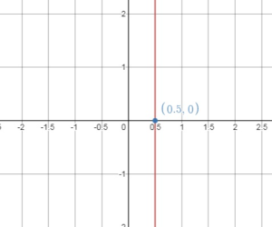

Hello Students!!! Are you looking for the Big Ideas Math Book 8th Grade Solution Key Chapter 4 Graphing and Writing Linear Equations on various websites? Stop your search now, because you are on the right page. Here the students can get the best study material to practice math in a correct way. You can learn the simple tricks to solve the problems with the help of Big Ideas Math Answers Grade 8 Chapter 4 Graphing and Writing Linear Equations.
Big Ideas Math Book 8th Grade Answer Key Chapter 4 Graphing and Writing Linear Equations
Practice makes your preparation perfect. You can score the maximum marks with reference to Big Ideas Math Answers Grade 8 Chapter 4 Graphing and Writing Linear Equations. We make you understand the concept of drawing the graphs with linear equations. Download Big Ideas Math Book 8th Grade Answer Key Chapter 4 Graphing and Writing Linear Equations for free.
Performance Task
- Graphing and Writing Linear Equations STEAM Video/Performance Task
- Graphing and Writing Linear Equations Getting Ready for Chapter 4
Lesson: 1 Graphing Linear Equations
Lesson: 2 Slope of a Line
Lesson: 3 Graphing Proportional Relationships
- Lesson 4.3 Graphing Proportional Relationships
- Graphing Proportional Relationships Homework & Practice 4.3
Lesson: 4 Graphing Linear Equations in Slope-Intercept Form
- Lesson 4.4 Graphing Linear Equations in Slope-Intercept Form
- Graphing Linear Equations in Slope-Intercept Form Homework & Practice 4.4
Lesson: 5 Graphing Linear Equations in Standard Form
- Lesson 4.5 Graphing Linear Equations in Standard Form
- Graphing Linear Equations in Standard Form Homework & Practice 4.5
Lesson: 6 Writing Equations in Slope-Intercept Form
- Lesson 4.6 Writing Equations in Slope-Intercept Form
- Writing Equations in Slope-Intercept Form Homework & Practice 4.6
Lesson: 7 Writing Equations in Point-Slope Form
- Lesson 4.7 Writing Equations in Point-Slope Form
- Writing Equations in Point-Slope Form Homework & Practice 4.7
Chapter: 4 – Graphing and Writing Linear Equations
- Graphing and Writing Linear Equations Connecting Concepts
- Graphing and Writing Linear Equations Chapter Review
- Graphing and Writing Linear Equations Practice Test
- Graphing and Writing Linear Equations Cumulative Practice
Graphing and Writing Linear Equations STEAM Video/Performance Task
STEAM Video
“Hurricane
A hurricane is a storm with violent winds. How can you prepare your home for a hurricane?
Watch the STEAM Video “Hurricane!” Then answer the following questions.
1. Robert says that the closer you are to the eye of a hurricane, the stronger the winds become. The wind speed on an island is 50 miles per hour when the eye of a hurricane is 140 miles away.
a. Describe the wind speed on the island when the eye of the hurricane is 100 miles away.
b. Describe the distance of the island from the eye of the hurricane when the wind speed on the island is 25 miles per hour.
c. Sketch a line that could represent the wind speed y (in miles per hour) on the island when the eye of x the hurricane is miles away from the island. Wind speed
2. A storm dissipates as it travels over land. What does this mean?
Performance Task
Anatomy of a Hurricane
After completing this chapter, you will be able to use the concepts you learned to answer the questions in the STEAM Video Performance Task. You will be given information about the atmospheric pressure inside a hurricane.
You will be asked to use a model to find the strength of a hurricane after x hours of monitoring. Why is it helpful to predict how strong the winds of a hurricane will become?
Graphing and Writing Linear Equations Getting Ready for Chapter 4
Chapter Exploration
1. Work with a partner.
a. Use the equation y = \(\frac{1}{2}\)x + 1 to complete the table. (Choose any two x-values and find the y-values.)
b. Write the two ordered pairs given by the table. These are called solutions of the equation.
c. PRECISION Plot the two solutions. Draw a line exactly through the points.
d. Find a different point on the line. Check that this point is a solution of the equation y = \(\frac{1}{2}\)x + 1.
e. LOGIC Do you think it is true that any point on the line is a solution of the equation y = \(\frac{1}{2}\)x + 1? Explain.
f. Choose five additional x-values for the table below. (Choose both positive and negative x-values.) Plot the five corresponding solutions. Does each point lie on the line?
g. LOGIC Do you think it is true that any solution of the equation y = \(\frac{1}{2}\)x + 1 is a point on the line? Explain.
h. Why do you think y = ax + b is called a linear equation?
Vocabulary
The following vocabulary terms are defined in this chapter. Think about what each term might mean and record your thoughts.
linear equation
slope
y-intercept
solution of a linear equation
x-intercept
Lesson 4.1 Graphing Linear Equations
EXPLORATION 1
Creating Graphs
Work with a partner. It starts snowing at midnight in Town A and Town B. The snow falls at a rate of 1.5 inche sper hour.
a. In Town A, there is no snow on the ground at midnight. How deep is the snow at each hour between midnight and 6 A.M.? Make a graph that represents this situation.
b. Repeat part(a) for TownB, which has 4 inches of snow on the ground at midnight.
c. The equations below represent the depth y(in inches) of snow x hours after midnight in Town C and Town D. Graph each equation.
Town C y = 2x + 3
Town D y = 8
d. Use your graphs to compare the snowfall in each town.
Answer:

Try It
Graph the linear equation.
Question 1.
y = 3x
Answer:
Make to table of values
Replace x with a number and find the value of y

Plot the values of x and y obtained above, on the graph

Draw the line through the points

Question 2.
y = – 2x – 1
Answer:

Plot the values of x and y

Now the line through the points

Question 3.
y = –\(\frac{1}{2}\)x + 2
Answer:

Plot the ordered pairs

Graph the linear equation.
Question 4.
y = 3
Answer:
The graph of y = 3 is a horizontal like passing through (0, 3)
Draw a horizontal line through this point.
Question 5.
y = – 1.5
Answer:
The graph of y = -1.5 is a horizontal line passing through (0, -1.5)
Draw a horizontal line through this point.
Question 6.
x = – 4
Answer:
The graph of x = – 4 is a vertical line passing through (-4, 0)
Draw a vertical line through this point.

Question 7.
x = \(\frac{1}{2}\)
Answer:
The graph of x = \(\frac{1}{2}\) is a vertical line passing through (\(\frac{1}{2}\), 0)
Draw a vertical line through this point.

Self-Assessment for Concepts & Skills
Solve each exercise. Then rate your understanding of the success criteria in your journal.
GRAPHING A LINEAR EQUATION Graph the linear equation.
Question 8.
y = – x + 1
Answer:
Make of a table of values
Replace x with a number and find the value of y
Plot the values of x and y obtained, on the graph,
Question 9.
y = 0.8x – 2
Answer:
Replace x with a number and find the value of y
Question 10.
x = 2.5
Answer:
The graph of x = 2.5 is a vertical line passing through (2.5, 0)
Draw a vertical line through this point.

Question 11.
y = \(\frac{2}{3}\)
Answer:
The graph of y = \(\frac{2}{3}\) is a horizontal line passing through (0, \(\frac{2}{3}\))
Draw a horizontal line through this point.

Question 12.
WHICH ONE DOESN’T BELONG?
Which equation does not belong with the other three? Explain your reasoning.
Answer:
y = x – 2
4x + 3 = y
y = x² + 6
x + 5 = y
Self-Assessment for Problem Solving
Solve each exercise. The rate your understanding of the success criteria in your journal.
Question 13.
A game show contestant earns y dollars for completing a puzzle in x minutes. This situation is represented by the equation y = – 250x + 5000. How long did a contestant who earned $500 take to complete the puzzle? Justify your answer.
Answer:
Given,
A game show contestant earns y dollars for completing a puzzle in x minutes.
This situation is represented by the equation y = – 250x + 5000.
y = -250x + 5000
500 = -250x + 5000
500 – 5000 = -250x + 5000 – 5000
-4500 = -250x
x = 18
Question 14.
The total cost y (in dollars) to join a cheerleading team and attend x competitions is represented by the equation y = 10x + 50.
a. Graph the linear equation.
Answer:

b. You have $75 to spend. How many competitions can you attend?
Answer:
75 ≤ 10x + 50
75 – 50 ≤ 10x
25 ≤ 10x
2.5 ≥ x
By this I can say that I can attend 2 competitions if I have $75 to spend.
Question 15.
The seating capacity for a banquet hall is represented by y = 8x + 56, where x is the number of extra tables you need. How many extra tables do you need to double the original seating capacity?
Answer:
Given,
The seating capacity for a banquet hall is represented by y = 8x + 56, where x is the number of extra tables you need.
y = 8x + 56
2 × 56 = 8x + 56
112 = 8x + 56
8x = 112 – 56
8x = 56
x = 7 tables
Graphing Linear Equations Homework & Practice 4.1
Review & Refresh
Tell whether the triangles are similar. Explain.
Question 1.

Answer:
x° + 46° + 95° = 180°
x° + 141° = 180°
x° = 180° – 141°
x° = 39°
Thus the angles of the triangle are 39°, 46°, 95°
y° + 39° + 46° = 180°
y° + 75° = 180°
y° = 180° – 75°
y° = 95°
Three angles of the triangle are 39°, 46°, 95°
The triangles have two pairs of congruent angles.
Question 2.
Answer:
x° + 40° + 51° = 180°
x° + 91° = 180°
x° = 180° – 91°
x° = 89°
Three angles of the triangle are 40°, 51°, 89°
y° + 40° + 79° = 180°
y° + 119° = 180°
y° = 180° – 119°
y° = 61°
Describe the translation of the point to its image.
Question 3.
(1, – 4) → (3, 0)
Answer:
A(1, -4) = A'(1 + 2, -4) = (3, -4)
A'(3, 4) = B(3, -4 + 4) = (3, 0)
Translate 2 units right and 4 units up.
Question 4.
(6, 4) → (- 4, – 6)
Answer:
We are given the points
(6, 4) → (- 4, – 6)
A(6, 4) = A'(6 – 10, 4) = (-4, 4)
A'(-4, -4) = B(-4, 4 – 10) = (-4, -6)
Question 5.
(4, – 2) → (- 9, 3)
Answer:
We are given the points
A(4, -2)
B(-9, 3)
A(4, -2) = A'(4 – 13, -2) = (-9, -2)
A'(-9, -2) = B(-9, -2 + 4) = (-9, 3)
Concepts, Skills, & Problem Solving
CREATING GRAPHS Make a graph of the situation. (See Exploration 1, p. 141.)
Question 6.
The equation y = – 2x + 8 represents the amount (in fluid ounces) of dish detergent in a bottle after x days of use.
Answer:

Question 7.
The equation y = 15x + 20 represents the cost (in dollars) of a gym membership after x months.
Answer:

PRECISION Copy and complete the table with two solutions. Plot the ordered pairs and draw the graph of the linear equation. Use the graph to find a third solution of the equation.
Question 8.
Answer:

(x, y) = (2, 5)

Question 9.
Answer:

(x, y) = (3, 3)

GRAPHING A LINEAR EQUATION Graph the linear equation.
Question 10.
y = – 5x
Answer:

Question 11.
y = 9x
Answer:

Question 12.
y = 5
Answer:
The graph of y = 5 is a horizontal line passing through (0, 5)
Draw a horizontal line through this point.

Question 13.
x = – 6
Answer:

Question 14.
y = x – 3
Answer:

Question 15.
y = – 7x – 1
Answer:

Question 16.
y = – \(\frac{x}{8}\) + 4
Answer:

Question 17.
y = 0.75x – 0.5
Answer:

Question 18.
y = – \(\frac{2}{3}\)
Answer:

Question 19.
y = 6.75
Answer:

Question 20.
x = – 0.5
Answer:
The graph of x = -0.5 is a vertical line passing through (-0.5, 0)
Draw a vertical line through this point.

Question 21.
x = \(\frac{1}{4}\)
Answer:
The graph of x = \(\frac{1}{4}\) is a vertical line passing through (\(\frac{1}{4}\), 0)
Draw a vertical line through this point.

Question 22.
YOU BE THE TEACHER
Your friend graphs the equation y = 4. Is your friend correct? Explain your reasoning.
Answer:

No my friend is not correct because the graph for the equation y = 4 is a horizontal line not a vertical line, and it passes through the point (0, 4) not (4, 0)
Question 23.
MODELING REAL LIFE
The equation y = 20 represents the cost y (in dollars) for sending x text messages in a month. Graph the linear equation. What does the graph tell you about your texting plan?
Answer:

Question 24.
MODELING REAL LIFE
The equation y = 2x + 3 represents the cost y (in dollars) of mailing a package that weighs x pounds.
a. Use a graph to estimate how much it costs to mail the package.
b. Use the equation to find exactly how much it costs to mail the package.
Answer:
Given the equation y = 2x + 3
The ordered pairs will be (0, 3), (2,7), (4, 11)
Now plot the ordered pairs

y = 2(1.126) + 3
= 5.252 ≈ 5.25
SOLVING A LINEAR EQUATION Solve for y. Then graph the linear equation.
Question 25.
y – 3x = 1
Answer:
y – 3x = 1
y = 3x + 1

Draw a line through the points

Question 26.
5x + 2y = 4
Answer:
5x + 2y = 4
2y = 4 – 5x
y = – \(\frac{5}{2}\)x + 2

Question 27.
– \(\frac{1}{3}\)y + 4x = 3
Answer:
– \(\frac{1}{3}\)y + 4x = 3
– \(\frac{1}{3}\)y = 3 – 4x
y = 12x – 9

Question 28.
x + 0.5y = 1.5
Answer:
x + 0.5y = 1.5
0.5y = -x + 1.5
y = -2x + 3

Question 29.
MODELING REAL LIFE
The depth y (in inches) of a lake after x years is represented by the equation y = 0.2x + 42. How much does the depth of the lake increase in four years? Use a graph to justify your answer.
Answer:
y = 0.2x + 42
Depth of the lake now: y = 0.2(0) + 42 = 42
Depth of the lake after 4 years: y = 0.2(4) + 42 = 42.8

42.8 – 42 = 0.8 inches
Question 30.
MODELING REAL LIFE
The amount y (in dollars) of money in your savings account after x months is represented by the equation y = 12.5x + 100.
a. Graph the linear equation.
Answer:

b. How many months will it take you to save a total of $237.50?
Answer:
y = 12.5x + 100
237.5 = x + 100
237.5 – 100 = 12.5x + 100 – 100
12.5x = 137.5
x = 11
Question 31.
PROBLEM SOLVING
The radius y (in millimeters) of a chemical spill after x days is represented by the equation y = 6x + 50.
a. Graph the linear equation.
Answer:

b. The leak is noticed after two weeks. What is the area of the leak when it is noticed? Justify your answer.
Answer:
y = 6(14) + 50
y = 84 + 50
y = 134 mm
2πr = 2π = 841.95 sq. mm
Question 32.
GEOMETRY
The sum S of the interior angle measures of a polygon with n sides is S = (n – 2) • 180°.
a. Plot four points (n, S) that satisfy the equation. Is the equation a linear equation? Explain your reasoning.
Answer:
b. Does the value n = 3.5 make sense in the context of the problem? Explain your reasoning.
Answer:
The value n = 3.5 does not make sense because the number of angles cannot be other than integer greater or equal to 2.
Question 33.
DIG DEEPER!
One second of video on your cell phone uses the same amount of memory as two pictures. Your cell phone can store 2500 pictures.
a. Create a graph that represents the number y of pictures your cell phone can store when you take x seconds of video.
Answer:
b. How many pictures can your cell phone store in addition to a video that is one minute and thirty seconds long?
Answer:
Determine the number of pictures you can store in addition to a video of 1 min 30 seconds.
1 min 30 seconds = (60 + 90) 3 seconds = 90 seconds
2500 – (2 . 90)
2500 – 180 = 2320 pictures
Lesson 4.2 Slope of a Line
EXPLORATION 1
Measuring the Steepness of a Line
Work with a partner. Draw any nonvertical line in a coordinate plane.
a. Develop a way to measure the steepness of the line. Compare your method with other pairs.
b. Draw a line that is parallel to your line. What can you determine about the steepness of each line? Explain your reasoning.
Answer:
EXPLORATION 2
Using Right Triangles
Work with a partner. Use the figure shown.

a. △ABC is a right triangle formed by drawing a horizontal line segment from point A and a vertical line segment from point B. Use this method to draw another right triangle, △DEF, with its longest side on the line
b. What can you conclude about the two triangles in part(a)? Justify your conclusion. Compare your results with other pairs.
c. Based on your conclusions in part(b), what is true about \(\frac{BC}{AC}\) and the corresponding measure in △DEF? Explain your reasoning. What do these values tell you about the line?
Answer:

Try It
Find the slope of the line.
Question 1.

Answer:
(x1, y1) = (-2, 3)
(x2, y2) = (3, 2)
m = (y2 – y1)/(x2 – x1)
m = (2 -3)/(3 – (-2))
m = -1/5
Thus slope = -1/5
Question 2.

Answer:
(x1, y1) = (-4, -1)
(x2, y2) = (2, 1)
m = (y2 – y1)/(x2 – x1)
m = (1 – (-1))/(2 – (-4))
m = 2/6
Thus slope = 1/3
Find the slope of the line through the given points.
Question 3.
(1, -2), (7, -2)
Answer:
(x1, y1) = (1, -2)
(x2, y2) = (7, -2)
m = (y2 – y1)/(x2 – x1)
m = (-2 – (-2))/(7 – 1)
m = 0/6
Thus slope = 0
Question 4.
(-3, -3), (-3, -5)
Answer:
(x1, y1) = (-3, -3)
(x2, y2) = (-3, -5)
m = (y2 – y1)/(x2 – x1)
m = (-5 + 3)/(-3 + 3)
m = -2/0
Thus slope = undefined
Question 5.
WHAT IF
The blue line passes through (-4, -3) and (-3, 2). Are any of the lines parallel? Explain.
Answer:
(x1, y1) = (-4, -3)
(x2, y2) = (-3, 2)
m = (y2 – y1)/(x2 – x1)
m = (2 + 3)/(-3 + 4)
m = 5/1
m = 5
The slpe of the blue line is 5 and the slope of the red line is also 5.
The blue lines and red lines have same slopes so they are parallel.
Self-Assessment for Concepts & Skills
Solve each exercise. Then rate your understanding of the success criteria in your journal.
Question 6.
VOCABULARY
What does it mean for a line to have a slope of 4?
Answer:
If a line have a slope of 4 it means that the line rises 4 units for every 1 units it runs.
FINDING THE SLOPE OF A LINE Find the slope of the line through the given points.
Question 7.
(1, -1), (6, 2)
Answer:
(x1, y1) = (1, -1)
(x2, y2) = (6, 2)
m = (y2 – y1)/(x2 – x1)
m = (2 – (-1))/(6 – 1)
m = 3/5
Question 8.
(2, -3), (5, -3)
Answer:
(x1, y1) = (2, -3)
(x2, y2) = (5, -3)
m = (y2 – y1)/(x2 – x1)
m = (5 – 2)/(-3 + 3)
m = 3/0
m = undefined
Question 9.
FINDING SLOPE
Are the lines parallel? Explain your reasoning.

Answer:
Red line:
(x1, y1) = (-1, 0)
(x2, y2) = (1, -2)
m = (y2 – y1)/(x2 – x1)
m = (-2 – 0)/1 – (-1))
m = -2/2
m = -1
Blue Line:
(x1, y1) = (-1, 3)
(x2, y2) = (1, -1)
m = (y2 – y1)/(x2 – x1)
m = (-1 – 3)/(1 – (-1))
m = -4/2
m = -2
The slope of the blue line and red line are not the same. So they are not parallel.
Self-Assessment for Problem Solving
Solve each exercise. Then rate your understanding of the success criteria in your journal.
Question 10.
The table shows the lengths (in inches) of your hair months after your last haircut. The points in the table lie on a line. Find and interpret the slope of the line. After how many months is your hair 4 inches long?

Answer:
Determine the slope of the line using two points from the table:
(2, 1), (4, 2)
m = (2 – 1)/4 – 2
m = 1/2
m = 0.5
This means that each month the hair grows 0.5 inches
As the hair grows 0.5 inches/ month, it will be 4 inches long after 4/0.5 = 8 months.
Question 11.
A customer pays an initial fee and a daily fee to rent a snowmobile. The total payment for 3 days is 92 dollars. The total payment for 5 days is 120 dollars. What is the daily fee? Justify your answer.
Answer:
Given,
A customer pays an initial fee and a daily fee to rent a snowmobile.
The total payment for 3 days is 92 dollars. The total payment for 5 days is 120 dollars.
m = (120 – 92)/5 – 3
m = 28/2
m = 14
Question 12.
You in-line skate from an elevation of 720 feet to an elevation of 750 feet in 30 minutes. Your friend in-line skates from an elevation of 600 feet to an elevation of 690 feet in one hour. Compare your rates of change in elevation.

Answer:
Given,
You in-line skate from an elevation of 720 feet to an elevation of 750 feet in 30 minutes.
Your friend in-line skates from an elevation of 600 feet to an elevation of 690 feet in one hour.
(750 – 720)/30 = 30/30 = 1 ft/min
(690 – 600)/60 = 90/60 = 1.5 ft/min
Slope of a Line Homework & Practice 4.2
Review & Refresh
Graph the linear equation.
Question 1.
y = 4x – 3
Answer:

Question 2.
x = -3
Answer:

Question 3.
y = 2
Answer:

Question 4.
y = \(\frac{3}{2}\)x – \(\frac{1}{2}\)
Answer:

Find the missing values in the ratio table.
Question 5.

Answer:

x/10 = 1/3
x = 10/3
x = 3.33
1/3 = 5/y
y = 5 × 3
y = 15
1/3 = 7/z
z = 3 × 7
z = 21
Question 6.

Answer:

Concepts, Skills, &Problem Solving
USING RIGHT TRIANGLES Use the figure shown (See Exploration 2, p. 147.)

Question 7.
Find the slope of the line.
Answer:
(x1, y1) = B(-4, 2)
(x2, y2) = A(-2, 1)
m = (y2 – y1)/(x2 – x1)
m = (1 – 2)/(-2 – (-4))
m = -1/2
Thus the slope m = -1/2
Question 8.
Let point D be at (-4, 1). Use the sides of △BDA to find the slope of the line.
Answer:

m = -BD/DA = -1/2
FINDING THE SLOPE OF A LINE Find the slope of the line.
Question 9.

Answer:
(x1, y1) = (-2, 0)
(x2, y2) = (2, 3)
m = (y2 – y1)/(x2 – x1)
m = (3 – 0)/(2 – (-2))
m = 3/4
Question 10.

Answer:
(x1, y1) = (-2, 5)
(x2, y2) = (2, 0)
m = (y2 – y1)/(x2 – x1)
m = (0 – 5)/(2 – (-2))
m = -5/4
Question 11.

Answer:
(x1, y1) = (-4, 1)
(x2, y2) = (1, -2)
m = (y2 – y1)/(x2 – x1)
m = (-2 – 1)/(1 + 2)
m = -3/5
Question 12.

Answer:
(x1, y1) = (-5, -4)
(x2, y2) = (1, -3)
m = (y2 – y1)/(x2 – x1)
m = (-3 – (-4))/(1 – (-5))
m = 1/6
Question 13.

Answer:
(x1, y1) = (-1, 3)
(x2, y2) = (3, 3)
m = (y2 – y1)/(x2 – x1)
m = (3 – 3)/(3 – (-1))
m = 0/4
m = 0
Question 14.

Answer:
(x1, y1) = (1, 3)
(x2, y2) = (1, -2)
m = (y2 – y1)/(x2 – x1)
m = (-2 – 3)/(1 – 1)
m = -5/0
m = undefined
FINDING THE SLOPE OF A LINE Find the slope of the line through the given points.
Question 15.
(4, -1), (-2, -1)
Answer:
(x1, y1) = (4, -1)
(x2, y2) = (-2, -1)
m = (y2 – y1)/(x2 – x1)
m = (-1 – (-1))/(-2 – 4)
m = 0/-6
m = 0
Question 16.
(5, -3), (5, 8)
Answer:
(x1, y1) = (5, -3)
(x2, y2) = (5, 8)
m = (y2 – y1)/(x2 – x1)
m = (8 – 3)/(5 – 5)
m = 5/0
m = undefined
Question 17.
(-7, 0), (-7, -6)
Answer:
(x1, y1) = (-7, 0)
(x2, y2) = (-7, -6)
m = (y2 – y1)/(x2 – x1)
m = (-6 – 0)/(-7 – (-7))
m = -6/0
m = undefined
Question 18.
(-3, 1), (-1, 5)
Answer:
(x1, y1) = (-3, 1)
(x2, y2) = (-1, 5)
m = (y2 – y1)/(x2 – x1)
m = (5 – 1)/(-1 + 3)
m = 4/2
m = 2
Question 19.
(10, 4), (4, 15)
Answer:
(x1, y1) = (10, 4)
(x2, y2) = (4, 15)
m = (y2 – y1)/(x2 – x1)
m = (15 – 4)/(4 – 10)
m = 11/-6
m = -11/6
Question 20.
(-3, 6), (2, 6)
Answer:
(x1, y1) = (-3, 6)
(x2, y2) = (2, 6)
m = (y2 – y1)/(x2 – x1)
m = (6 – 6)/(2 – (-3))
m = 0/5
m = 0
Question 21.
REASONING
Draw a line through each point using slope of m = \(\frac{1}{4}\). Do the lines intersect? Explain.

Answer:

The 2 lines are parallel because they have the same slope and they do not intersect.
Question 22.
YOU BE THE TEACHER
Your friend finds the slope of the line shown. Is your friend correct? Explain your reasoning.

Answer:

No my friend is not correct because the denominator should be 2 – 4
(x1, y1) = (2, 3)
(x2, y2) = (4, 1)
m = (y2 – y1)/(x2 – x1)
m = (1 – 3)/(4 – 2)
m = -2/2
m = -1
IDENTIFYING PARALLEL LINES Which lines are parallel? How do you know?
Question 23.

Answer:
Blue line:
(x1, y1) = (-5, 2)
(x2, y2) = (-4, -1)
m = (y2 – y1)/(x2 – x1)
m = (-1 – 2)/(-4 – (-5))
m = -3/1
m = -3
Red line:
(x1, y1) = (-2, 1)
(x2, y2) = (-1, -2)
m = (y2 – y1)/(x2 – x1)
m = (-2 – 1)/(-1 – (-2))
m = -3/1
m = -3
Green Line:
(x1, y1) = (1, 3)
(x2, y2) = (2, -1)
m = (y2 – y1)/(x2 – x1)
m = (-1 – 3)/(2 – 1)
m = -4/1
m = -4
Blue line and red line have slope of -3, so they are parallel.
Question 24.

Answer:
Blue line:
(x1, y1) = (-2, 3)
(x2, y2) = (-5, -2)
m = (y2 – y1)/(x2 – x1)
m = (-2 – 3)/(-5 – (-2))
m = -5/-3
m = 5/3
Red line:
(x1, y1) = (1, 2)
(x2, y2) = (-2, -2)
m = (y2 – y1)/(x2 – x1)
m = (-2 – 2)/(-2 – 1)
m = -4/-3
m = 4/3
Green Line:
(x1, y1) = (4, 1)
(x2, y2) = (1, -3)
m = (y2 – y1)/(x2 – x1)
m = (-3 – 1)/(1 – 4)
m = -4/-3
m = 4/3
Red line and green line have slope of 4/3 by this we can say that they are parallel.
IDENTIFYING PARALLEL LINES Are the given lines parallel? Explain your reasoning.
Question 25.
y = -5, y = 3
Answer:
Both lines are horizontal and have slope = 0
Question 26.
y = 0, x = 0
Answer:
The line y = 0 have slope = 0 and are horizontal lines.
The line x = 0 have slope = undefined and are vertical lines.
So, they are not parallel.
Question 27.
x = -4, x = 1
Answer:
Both lines are vertical and have an undefined slope.
FINDING SLOPE The points in the table lie on a line. Find the slope of the line.
Question 28.

Answer:
m = (y2 – y1)/(x2 – x1)
m = (10 – 2)/(3 – 1) = (18 – 10)/(5 – 3) = (26 – 18)/(7 – 5)
m = 8/2 = 8/2 = 8/2
m = 4 = 4 = 4
Slope = 4
Question 9.

Answer:
m = (y2 – y1)/(x2 – x1)
m = (2 – 0)/(2 – (-3)) = (4 – 2)/(7 – 2) = (6 – 4)/(12 – 7)
m = 2/5 = 2/5 = 2/5
m = 2/5
Question 30.
MODELING REAL LIFE
Carpenters refer to the slope of a roof as the pitch of the roof. Find the pitch of the roof.

Answer:
Pitch of the roof = rise/run
= 4/12 = 1/3
Question 31.
PROJECT
The guidelines for a wheelchair ramp suggest that the ratio of the rise to the run be no greater than 1 : 12.

a. CHOOSE TOOLS Find a wheelchair ramp in your school or neighborhood. Measure its slope. Does the ramp follow the guidelines?
Answer:
rise/run < 1/12
m = 0.06
1/12 = 0.0833
0.06 < 0.0833
As m < 1/12 the wheelchair ramp follows the guides.
b. Design a wheelchair ramp that provides access to a building with a front door that is 2.5 feet above the sidewalk. Illustrate your design.
Answer:
AC/AB = 1/12
2.5/AB = 1/12
AB = 2.5 × 12
AB = 30
So the end of the ramp should be placed at least 30 feet from the front door.
USING AN EQUATION Use an equation to find the value of k so that the line that passes through the given points has the given slope.
Question 32.
(1, 3), (5, k); m = 2
Answer:
A(1, 3)
B(5, k)
m = 2
2 = (k – 3)/(5 – 1)
2 × 4 = k – 3
8 = k – 3
k = 8 + 3
k = 11
Question 33.
(-2, k), (2, 0); m = -1
Answer:
Given,
A(-2, k)
B(2, 0)
m = -1
-1 = (0 – k)/2 – (-2)
-1 = -k/4
-4 = -k
k = 4
Question 34.
(-4, k), (6, -7); m = –\(\frac{1}{5}\)
Answer:
Given,
A(-4, k)
B(6, -7)
m = –\(\frac{1}{5}\)
–\(\frac{1}{5}\) = (-7 – k)/6 – (-4)
-2 = -7 – k
-2 + 7 = -k
5 = -k
k = -5
Question 35.
(4, -4), (k, -1); m = \(\frac{3}{4}\)
Answer:
\(\frac{3}{4}\) = (-1 – (-4))/(k – 4)
4 = k – 4
k = 4 + 4
k = 8
Question 36.
MODELING REAL LIFE
The graph shows the numbers of prescriptions filled over time by a pharmacy.

a. Find the slope of the line.
Answer:
(0, 0), (20, 5)
m = (5 – 0)/(20 – 0)
m = 5/20
m = 1/4
b. Explain the meaning of the slope as a rate of change.
Answer:
This means that every 4 minutes a prescription is filled.
Question 37.
CRITICAL THINKING
Which is steeper: the boatramp, or a road with a 12% grade? Note: Explain. (Road grade is the vertical increase divided by the horizontal distance.)

Answer:
Mramp = rise/run = 6/36 = 1/6
Mroad = 12% = 12/100 = 0.12
0.16 = 0.166… > 0.12
Mramp > Mroad
Therefore the slope of the ramp is steeper than the slope of the road.
Question 38.
REASONING
Do the points A(-2, -1), B(1, 5), and C(4, 11) lie on the same line? Without using a graph, how do you know?
Answer:
Given,
A(-2, -1), B(1, 5), and C(4, 11)
mAB = (5 – (-1))/(1 – (-2)) = 6/3 = 2
mBC = (11 – 5)/(4 – 1) = 6/3 = 2
By seeing the slopes we can say that the points A, B, C lie on the same line.
Question 39.
PROBLEM SOLVING
A small business earns a profit of $6500 in January and $17,500 in May. What is the rate of change in profit for this time period? Justify your answer.
Answer:
Pjan = 6500
Pmay = 17,500
Pmay – Pjan/5 – 1
= (17,500 – 6500)/4
= 11,000/4 = 2750
Question 40.
STRUCTURE
Choose two points in the coordinate plane. Use the slope formula to find the slope of the line that passes through the two points. Then find the slope using the formula \(\frac{y_{1}-y_{2}}{x_{1}-x_{2}}\). Compare your results.
Answer:
P1(2, 5)
P2(3, 10)
m1 = (10 – 5)/(3 – 2) = 5/1 = 5
m2 = (5 – 10)/(1 – 3) = -5/-1 = 5
m1 = m2
Question 41.
DIG DEEPER!
The top and the bottom of the slide are level with the ground, which has a slope of 0.

a. What is the slope of the main portion of the slide?
b. Describe the change in the slope when the bottom of the slide is only 12 inches above the ground. Explain your reasoning.
Answer:
18 inches = 1.5 feet
mMC = rise/run = (8 – 1.5)/(12 – 1 – 1) = 6.5/10 = 0.65
AD = 1
mMC = CR/MR
= (8 – 1)/(12 – 1 – 1) = 7/10 = 0.7
The slope increases from 0.65 to 0.70 because the rise increasses, while the run stays the same.
Lesson 4.3 Graphing Proportional Relationships
EXPLORATION 1
Using a Ratio Table to Find Slope
Work with a partner. The graph shows amounts of vinegar and water that can be used to make a cleaning product.
a. Use the graph to make a ratio table relating the quantities. Explain how the slope of the line is represented in the table.

b. Make a ratio table that represents a different ratio of vinegar to water. Use the table to describe the slope of the graph of the new relationship.
Answer:
EXPLORATION 2
Deriving an Equation
Work with a partner. Let (x, y) represent any point on the graph of a proportional relationship.

a. Describe the relationship between the corresponding side lengths of the triangles shown in the graph. Explain your reasoning.
b. Use the relationship in part(a) to write an equation relating y, m, and x. Then solve the equation for y. How can you find the side lengths of the triangles in the graph?
c. What does your equation in part(b) describe? What does represent? Explain your reasoning.
Answer:
Try It
Question 1.
WHAT IF
The cost of frozen yogurt is represented by y = 0.75x. Graph the equation and interpret the slope.
Answer:
The equation shows that the slope m is 0.75. So the graph passes through the points (0, 0) and (1, 0.75).
Plot the ordered pairs and draw the graph.

The slope indicates that the unit cost is $0.75 per ounce.
Question 2.
How much would a spacecraft that weighs 3500 kilograms on Earth weigh on Titan?
Answer:
y = 1/7 x
y = 1/7 × 3500
y = 500 kg
So a spacecraft would weigh 500 kg on Titan.
Self-Assessment for Concepts & Skills
Solve each exercise. Then rate your understanding of the success criteria in your journal.
GRAPHING A PROPORTIONAL RELATIONSHIP Graph the equation.
Question 3.
y = 4x
Answer:

Question 4.
y = -3x
Answer:

Question 5.
y = 8x
Answer:

Question 6.
WRITING AND USING AN EQUATION
The number of objects a x machine produces is proportional to the time (in minutes) that the machine runs. The machine produces five objects in four minutes.
a. Write an equation that represents the situation.
Answer:
As 5 objects are produced in 4 minutes, the slope of the line is m = 5/4.
The equation that represents the situation is
y = 5/4 x
y = 1.25 x
b. Graph the equation in part (a) and interpret the slope.
Answer:
Use the slope. The equation shows that the slope m is 1.25. So the graph passes through the points (0, 0) and (1, 1.25)
c. How many objects does the machine produce in one hour?
Answer:

Self-Assessment for Problem Solving
Solve each exercise. Then rate your understanding of the success criteria in your journal.
Question 7.
The amount y (in liters) of water that flows over a natural waterfall in x seconds is represented by the equation y = 500x. The graph shows the number of liters of water that flow over an artificial waterfall. Which waterfall has a greater flow? Justify your answer.

Answer:
Given the equation y = 500x
15000 – 3000 = 12000
12000/4 = 3000
Mnatural = 500
3000 > 500
Therefore the artificial waterfall has greater flow.
Question 8.
The speed of sound in air is 343 meters per second. You see lightning and hear thunder 12 seconds later.
a. Is there a proportional relationship between the amount of time that passes and your distance from a lightning strike? Explain.
Answer:
y = kx
where k is the speed of sound, x the time and y the distance.
Yes, there is a proportional relationship between the amount of time that passes and your distance from the lightning strike as the further you are, the more time will pass until the sound reaches you.
b. Estimate your distance from the lightning strike.
Answer:
y = 343 × 12
= 4116 meters
Graphing Proportional Relationships Homework & Practice 4.3
Review & Refresh
Find the slope of the line.
Question 1.

Answer:
(x1, y1) = (0, -3)
(x2, y2) = (3, 0)
m = (y2 – y1)/(x2 – x1)
m = (0 – (-3))/(3 – 0)
m = (0 + 3)/(3 – 0)
m = 3/3
m = 1
Question 2.

Answer:
(x1, y1) = (0, 1)
(x2, y2) = (3, -5)
m = (y2 – y1)/(x2 – x1)
m = (-5 – 1)/(3 – 0)
m = -6/3
m = -2
Question 3.

Answer:
(x1, y1) = (0, 0)
(x2, y2) = (2, 8)
m = (y2 – y1)/(x2 – x1)
m = (8 – 0)/(2 – 0)
m = 8/2
m = 4
Solve the equation. Check your solution.
Question 4.
2x + 3x = 10
Answer:
Given the equation
2x + 3x = 10
5x = 10
x = 10/5
x = 2
Question 5.
x + \(\frac{1}{6}\) = 4 – 2x
Answer:
Given the equation
x + \(\frac{1}{6}\) = 4 – 2x
x + 2x = 4 – \(\frac{1}{6}\)
3x = 4 – \(\frac{1}{6}\)
3x = \(\frac{23}{6}\)
x = \(\frac{23}{18}\)
Question 6.
2(1 – x) = 11
Answer:
2(1 – x) = 11
2 – 2x = 11
2 – 11 = 2x
2x = -9
x = -9/2
Concepts, Skills, & Problem Solving
USING EQUIVALENT RATIOS The graph shows amounts of water and flour that can be used to make dough. (See Exploration 1, p. 155.)

Question 7.
Use the graph to make a ratio table relating the quantities. Explain how the slope of the line is represented in the table.
Answer:

m = rise/run
= (10 – 5)/(6 – 3)
= 5/3
That means to every 5 cups of flour there is an increase of 3 cups of water.
The slope m is 5/3.
Question 8.
Make a ratio table that represents a different ratio of flour to water. Use the table to describe the slope of the graph of the new relationship.
Answer:

From the table we find that for every increase of 7 cups of flour there is an increase of 4 cups of water.
The slope is 7/4.
Question 9.
GRAPHING AN EQUATION
The amount y(in dollars) that you raise by selling fundraiser tickets is represented by the equation y = 5x. Graph the equation and interpret the slope.
Answer:

The slope indicates that the unit cost is $5 per ticket.
IDENTIFYING PROPORTIONAL RELATIONSHIPS Tell whether and are in a proportional relationship. Explain your reasoning. If so, write an equation that represents the relationship.
Question 10.

Answer:
The graph doesn’t represent a proportional relationship because it doesn’t pass through the point (0, 0).
Question 11.

Answer:
The graph represents a proportional relationship because it is linear and passes through the point (0, 0)
(0, 0), (2, 8)
m = (8 – 0)/(2 – 0)
m = 8/2
m = 4
The equation is y = 4x
Question 12.

Answer:
(2 – 1)/(6 – 3) = 1/3
(3 – 2)/(9 – 6) = 1/3
(4 – 3)/(12 – 9) = 1/3
As the rate of change is constant, it means that the graph is a line.
(1 – y)/(3 – 0) = 1/3
(1 – y)/3 = 1/3
1 – y = 1
y = 1 – 1
y = 0
Therefore the point (0, 0) belomgs to the graph.
So the table represents a proportional relationship
y = 1/3 x
Question 13.

Answer:
(8 – 4)/(5 – 2) = 4/3
(13 – 8)/(8 – 5) = 5/3
(23 – 13)/10 – 8 = 10/2 = 5
Question 14.
MODELING REAL LIFE
The cost y (in dollars) to rent a kayak is proportional to the number x of hours that you rent the kayak. It costs $27 to rent the kayak for 3 hours.

a. Write an equation that represents the situation.
b. Interpret the slope of the graph of the equation.
c. How much does it cost to rent the kayak for 5 hours? Justify your answer.
Answer:
y = kx
27 = k × 3
k = 27/3
k = 9
The equation is k = 9x
b. The slope k = 3 shows that the cost of renting the kayak per hour is $9.
c. y = 9 × 5
y = 45
Question 15.
MODELING REAL LIFE
The distance y (in miles) that a truck travels on x gallons of gasoline is represented by the equation y = 18x. The graph shows the distance that a car travels.

a. Which vehicle gets better gas mileage? Explain how you found your answer.
Answer:
y = 18x
(0, 0), (2, 50)
m = (50 – 0)/(2 – 0)
m = 50/2
m = 25
25 > 18
Therefore the car has better mileage.
b. How much farther can the vehicle you chose in part(a) travel on 8 gallons of gasoline?
Answer:
y = 25 × 8 – 18 × 8
= 200 – 144
= 56 miles
Question 16.
PROBLEM SOLVING
Toenails grow about 13 millimeters per year. The table shows fingernail growth.

a. Do fingernails or toenails grow faster? Explain.
Answer:
y = 0.25x
m = (1.4 – 0.7)/(2 – 1)
m = 0.7
y = 0.7x
Because 0.7 > 0.25, the fingernails grow faster.
b. In the same coordinate plane, graph equations that represent the growth rates of toenails and fingernails. Compare and interpret the steepness of each graph.
Answer:

Question 17.
REASONING
The quantities and are in a proportional relationship. What do you know about the ratio of y to x for any point (x, y) on the graph of x and y?
Answer:
y = kx
where k is constant
y/x = k
This means the ratio of y to x is constant.
Question 18.
DIG DEEPER!
The graph relates the temperature change y (in degrees Fahrenheit) to the altitude change x (in thousands of feet).

a. Is the relationship proportional? Explain.
Answer: The relationship is proportional because the graph is linear and passes through the origin.
b. Write an equation of the line. Interpret the slope.
Answer:
(0,0), (10, -35)
m = (-35 – 0)/(10 – 0)
= -35/10
= -3.5
y = -3.5x
c. You are at the bottom of a mountain where the temperature is 74°F. The top of the mountain is 5500 feet above you. What is the temperature at the top of the mountain? Justify your answer.
Answer:
x = 5.5 – 0 = 5.5 thousand feet
y = -3.5x = -3.5(5.5) = -19.25
74 – 19.25 = 54.75°F
Question 19.
CRITICAL THINKING
Consider the distance equation d = rt, where d is the distance (in feet), r is the rate (in feet per second), and t is the time (in seconds). You run for 50 seconds. Are the distance you run and the rate you run at proportional? Use a graph to justify your answer.
Answer:
d = rt
d = 50r
Having the form y = kx the equation represents a proportional relationship.

Lesson 4.4 Graphing Linear Equations in Slope-Intercept Form
EXPLORATION 1
Deriving an Equation
Work with a partner. In the previous section, you learned that the graph of a proportional relationship can be represented by the equation y = mx, where m is the constant of proportionality.

a. You translate the graph of a proportional relationship 3 units up as shown below. Let (x, y) represent any point on the graph. Make a conjecture about the equation of the line. Explain your reasoning.

b. Describe the relationship between the corresponding side lengths of the triangles. Explain your reasoning.
c. Use the relationship in part(b) to write an equation relating y, m, and x. Does your equation support your conjecture in part(a)? Explain.
d. You translate the graph of a proportional relationship b units up. Write an equation relating y, m, x, and b. Justify your answer.
Answer:

Try It
Find the slope and the y-intercept of the graph of the linear equation.
Question 1.
y = 3x – 7
Answer:
Given the equation
y = 3x – 7
Write the equation in slope – intercept form: y = mx + b
The slope of the line is m and the y – intercept of the line is b.
y = 3x – 7
Slope = 3 and y – intercept = -7
Question 2.
y – 1 = –\(\frac{2}{3}\)x
Answer:
Write the equation in slope – intercept form: y = mx + b
The slope of the line is m and the y – intercept of the line is b.
y – 1 = –\(\frac{2}{3}\)x
y = –\(\frac{2}{3}\)x + 1
Slope = –\(\frac{2}{3}\) and y – intercept = 1
Graph the linear equation. Identify the x-intercept.
Question 3.
y = x – 4
Answer:
y = x – 4
Comparing the above equation with slope – intercept equation.
slope = 1, y-intercept = -4
Ploy y – intercept and slope
slope = rise/run = 1/1
Plot the point that is 1 unit right and 1 unit up from (0, -4) = (1, -3)

Thus the intercept is 4.
Question 4.
y = –\(\frac{1}{2}\)x + 1
Answer:
y = –\(\frac{1}{2}\)x + 1
Comparing the above equation with slope – intercept equation.
Slope = –\(\frac{1}{2}\), y-intercept = 1
y-intercept = 1. So plot (0, 1)
Slope = rise/run = -1/2
Plot the point that is 2 units right and 1 unit down from (0, -4) = (2, 0)

So, the x-intercept is 2.
Self-Assessment for Concepts & Skills
Solve each exercise. Then rate your understanding of the success criteria in your journal.
Question 5.
IN YOUR OWN WORDS
Consider the graph of the equation y = mx + b.
a. How does changing the value of m affect the graph of the equation?
Answer:
The value of m is the slope of the graph. If the value of m changes it means the slope of the graph is changing, whether it will rise or fall from left or right is dependent on the value of m.
b. How does changing the value of b affect the graph of the equation?
Answer:
The value of b is the y-intercept of the graph. If the value of b changes it means it affects where the graph crosses the y – axis.
IDENTIFYING SLOPE AND y-INTERCEPT Find the slope and the y-intercept of the graph of the linear equation.
Question 6.
y = -x + 0.25
Answer:
y = mx + c
slope = -1 and y – intercept = 0.25
Question 7.
y – 2 = –\(\frac{3}{4}\)x
Answer:
Given the equation
y – 2 = –\(\frac{3}{4}\)x
y = –\(\frac{3}{4}\)x + 2
slope = –\(\frac{3}{4}\) and y – intercept = 2
GRAPHING A LINEAR EQUATION Graph the linear equation. Identify the x-intercept.
Question 8.
y = x – 7
Answer:

The line crosses the x-axis at (7, 0)
So, the x – intercept is 7.
Question 9.
y = 2x + 8
Answer:

The line crosses the x – axis at (-4, 0)
So, the x – intercept is -4.
Self-Assessment for Problem Solving
Solve each exercise. Then rate your understanding of the success criteria in your journal.
Question 10.
The height y (in feet) of a movable bridge after rising for seconds is represented by the equation y = 3x + 6. Graph the equation. Interpret the y-intercept and slope. How many seconds does it take the bridge to reach a height of 76 feet? Justify your answer.

Answer:
Given,
y = 3x + 6.
slope = 3, y – intercept = 16

The y – intercept is 16. So, the initial height of the bridge is 16 feet.
The slope is 3. So, the bridge rises 3 feet per second.
The bridge will reach a height of 76 feet in 20 seconds.
Question 11.
The number of perfume bottles in storage after x months is represented by the equation y = -20x + 460. Graph the equation. Interpret the y-intercept and the slope. In how many months will there be no perfume bottles left in storage? Justify your answer.

Answer:
Given the equation
y = -20x + 460
Slope = -20, y-intercept = 460

The y-intercept is 460. So, the initial number of perfume in the storage is 460.
The slope is -20. So, the number of perfume bottle decrease with 20 bottles per months.
There will be no perfume bottle left in the storage in 23 months.
Graphing Linear Equations in Slope-Intercept Form Homework & Practice 4.4
Review & Refresh
Tell whether x and y are in a proportional relationship. Explain your reasoning. If so, write an equation that represents the relationship.
Question 1.

Answer:
(8 – 6)/(2 – 1) = 2/1 = 2
(10 – 8)/(3 – 2) = 2/1 = 2
(12 – 10)/(4 – 3) = 2/1 = 2
The rate of change in the table is constant.
(6 – y)/(1 – 0) = 2
6 – y = 2
y = 6 – 2
y = 4
Therefore the graph does not pass through the origin.
So x and y are not proportional.
Question 2.

Answer:
(4 – 0)/(-8 – 0) = 4/-8 = -1/2 = -0.5
(2 – 4)/(-4 – (-8)) = -2/4 = -1/2 = -0.5
(-2 – 2)/(4 – (-4)) = -4/8 = -1/2 = -0.5
(-4 – (-2))/(8 – 4) = -2/4 = -1/2 = -0.5
As the rate of change is constant, x and y are in a proportional relationship.
y = -0.5x
Solve the equation for y.
Question 3.
x = 4y – 2
Answer:
Given the equation
x = 4y – 2
x – 2 = 4y
y = x/4 + 1/2
Question 4.
3y = -6x + 1
Answer:
Given the equation
3y = -6x + 1
y = -2x + 1/3
Question 5.
1 + y = –\(\frac{4}{5}\)x – 2
Answer:
Given the equation
1 + y = –\(\frac{4}{5}\)x – 2
y = –\(\frac{4}{5}\)x – 3
Question 6.
2.5y = 5x – 5
Answer:
Given the equation
2.5y = 5x – 5
y = 2x – 2
Question 7.
1.3y + 5.2 = -3.9x
Answer:
Given the equation
1.3y + 5.2 = -3.9x
1.3y = -3.9x – 5.2
y = -3x – 4
Question 8.
y – \(\frac{2}{3}\)x = -6
Answer:
Given the equation
y – \(\frac{2}{3}\)x = -6
y = \(\frac{2}{3}\)x -6
Concepts, Skills, &Problem Solving
GRAPHING A LINEAR EQUATION Graph the equation. (See Exploration 1, p. 161.)
Question 9.
The graph of y = 3.5x is translated up 2 units.
Answer:
Given the equation
y = 3.5x
The line obtained by translating the graph of the line y = 3.5x up 2 units has the same slope (3.5) and y – intercept 2 units greater, which means b = 0 + 2 = 2

Question 10.
The graph of y = -5x is translated down 3 units.
Answer:
y = -5x
The line obtained by translating the graph of the line y = -5x down 3 units has the same slope and the y – intercept 3 units smaller, which means b = 0 – 3 = -3
MATCHING EQUATIONS AND GRAPHS Match the equation with its graph. Identify the slope and the y-intercept.
Question 11.
y = 2x + 1
Answer:
Given the eqation
y = 2x + 1
slope = 2 and y – intercept = 1
Question 12.
y = \(\frac{1}{3}\)x – 2
Answer:
slope = 1/3 and y – intercept = -2
Question 13.
y = –\(\frac{2}{3}\)x + 1
Answer:

Answer:
Slope = -2/3 and y – intercept = 1
The graph which passes through the point (0, 1) and has a negative slope is the matching graph of the given equation.
IDENTIFYING SLOPES AND y-INTERCEPTS Find the slope and the y-intercept of the graph of the linear equation.
Question 14.
y = 4x – 5
Answer:
y = mx + b
slope = 4 and y — intercept = -5
Question 15.
y = -7x + 12
Answer:
y = -7x + 12
y = mx + b
slpoe = -7 and y – intercept = 12
Question 16.
y = –\(\frac{4}{5}\)x – 2
Answer:
y = mx + b
slope = -4/5
y – intercept = -2
Question 17.
y = 2.25x + 3
Answer:
y = mx + b
slope = 2.25 and y – intercept = 3
Question 18.
y + 1 = \(\frac{4}{3}\)x
Answer:
y = mx + b
y + 1 = \(\frac{4}{3}\)x
y = \(\frac{4}{3}\)x – 1
slope = \(\frac{4}{3}\), y – intercept = -1
Question 19.
y – 6 = \(\frac{3}{5}\)x
Answer:
y = mx + b
y – 6 = \(\frac{3}{5}\)x
y = \(\frac{3}{5}\)x + 6
slope = 3/8 and y – intercept = 6
Question 20.
y – 3.5 = -2x
Answer:
y = mx + b
y – 3.5 = -2x
y = -2x + 3.5
slope = -2 and y – intercept = 3.5
Question 21.
y = -5 – \(\frac{1}{2}\)x
Answer:
y = mx + b
y = -5 – \(\frac{1}{2}\)x
y =- \(\frac{1}{2}\)x – 5
slope = – \(\frac{1}{2}\) and y – intercept = -5
Question 22.
y = 11 + 1.5x
Answer:
y = mx + b
y = 1.5x + 11
slope = 1.5 and y – intercept = 11
Question 23.
YOU BE THE TEACHER
Your friend finds the slope and y-intercept of the graph of the equation y = 4x – 3. Is your friend correct? Explain your reasoning.

Answer:
y = 4x – 3
No my friend is not correct because the y – intercept is -3.
Question 24.
MODELING REAL LIFE
The number y of seasonal allergy shots available at a facility x days after receiving a shipment is represented by y = -15x + 375.
a. Graph the linear equation.
b. Interpret the slope and the y-intercept.
Answer:
y = -15x + 375
x = 0
y = -15(0) + 375 = 375
y = 0
0 = -15x + 375
15x = 375
x = 375/15
x = 25

The slope shows that the number of seasonal allergy shots decrease by 15 shots each day.
The y – intercept shows that the number of shots immediately after receiving a shipment is 375.
GRAPHING AN EQUATION Graph the linear equation. Identify the x-intercept.
Question 25.
y = x + 3
Answer:
Given the equation
y = x + 3
slope = 1 and y – intercept = 3
Slope = rise/run = 1/1
Plot the point that is 1 unit right and 1 unit up from (0, 3) = (1, 4)

So, the x – intercept is -3.
Question 26.
y = 4x – 8
Answer:
y = 4x – 8
Comparing the above equation with slope – intercept equation.
slope = 4 and y – intercept = -8
Slope = rise/run = 4/1 = 4
Plot the point that is 1 unit right and 4 unit up from (0, -8) = (1, -4)

Question 27.
y = -3x + 9
Answer:
y = -3x + 9
slope = -3 and y – intercept = 9
slope rise/run = -3/1 = -3

So, the intercept is 3.
Question 28.
y = -5x – 5
Answer:
y = -5x – 5
slope = -5 and y – intercept = -5
slope = rise/run = -5/1
Plot the point that is 1 unit right and 5 unit up from (0, -5) = (1, -10)

So, the x – intercept is -1.
Question 29.
y + 14 = -7x
Answer:
y + 14 = -7x
y = -7x – 14
slope = -7 and y – intercept = -14
Slope = rise/run = -7/1
Plot the point that is 1 unit right and 7 unit down from (0, -14) = (1, -21)

So, the x – intercept is -2.
Question 30.
y = 8 – 2x
Answer:
Given the equation
y = 8 – 2x
y = -2x + 8
slope = -2 and y – intercept = 8
slope = rise/run = -2/1
Plot the point 1 unit right and 2 units down from (0, 8) = (1, 6)

So, the x – intercept is 4.
Question 31.
PRECISION
You go to a harvest festival and pick apples.
a. Which equation represents the cost (in dollars) of going to the festival and picking x pounds of apples? Explain.

b. Graph the equation you chose in part(a).
Answer:
Picking a pound of apples costs $0.75, therefore x pounds cost 0.75 × x = 0.75x
y = 0.75x + 5

Question 32.
REASONING
Without graphing, identify the equations of the lines that are parallel. Explain your reasoning.

Answer:
The lines which area parallel are those having the same slope.
y = 2x + 4
y = 2x – 3
y = 2x + 1
y = 1/2x + 1
y = 1/2x + 2
Question 33.
PROBLEM SOLVING
A skydiver parachutes to the ground. The height y (in feet) of the skydiver after x seconds is y = -10x + 3000.

a. Graph the linear equation.
b. Interpret the slope, y-intercept, and x-intercept.
Answer:
y = -10x + 3000
x = 0
y = -10(0) + 3000 = 3000
y = 0
0 = -10 + 3000
10x = 3000
x = 3000/10 = 300

b. The slope shows that each second the skydiver descends 10 feet.
The y – intercept shows that the skydiver begins its dive from 3000 feet.
The x – intercept shows that he reaches the ground after 300 seconds.
Question 34.
DIG DEEPER!
Six friends create a website. The website earns money by selling banner ads. It costs $120 a month to operate the website.
a. A banner ad earns $0.005 per click. Write a linear equation that represents the monthly profit after paying operating costs.
b. Graph the equation in part(a). On the graph, label the number of clicks needed for the friends to start making a profit. Explain.
Answer:
y = 0.005x – 120
x = 0
y = 0.005(0) – 120
y = -120
y = 0
0 = 0.005x – 120
0.005x = 120
x = 24000

x > 24,000
Lesson 4.5 Graphing Linear Equations in Standard Form
EXPLORATION 1
Using Intercepts
Work with a partner. You spend $150 on fruit trays and vegetable trays for a party.
a. You buy x fruit trays and y vegetable trays. Complete the verbal model. Then use the verbal model to write an equation that relates x and y.
b. What is the greatest number of fruit trays that you can buy? vegetable trays? Can you use these numbers to graph your equation from part (a) in the coordinate plane? Explain.
c.Use a graph to determine the different combinations of fruit trays and vegetable trays that you can buy. Justify your answers algebraically.
d. You are given an extra $50 to spend. How does this affect the intercepts of your graph in part(c)? Explain your reasoning.
Answer:
Try It
Graph the linear equation.
Question 1.
x + y = -2
Answer:
Given the equation
y = mx + b
x + y = -2
y = -x – 2
Comparing the value of b and m from y = mx + b
m = -1 and b = -2
Plot y – intercept = (0, b) = (0, -2)
Slope = -1
run/rise = -1/1
Plot the point 1 unit down and 1 unit to the right = (1, -3)
Now plot the points and draw the graph

Question 2.
–\(\frac{1}{2}\)x + 2y = 6
Answer:
–\(\frac{1}{2}\)x + 2y = 6
2y = 6 + \(\frac{1}{2}\)x
y = 0.25x + 3
Comparing the value of b and m from y = mx + b
m = 0.25 and b = 3
Plot y – intercept = (0, b) = (0, 3)
Slope = 0.25
run/rise = 0.25/1
Plot the point 0.25 unit up and 1 unit to the right = (1, 3.25)
Now plot the points and draw the graph

Question 3.
–\(\frac{2}{3}\)x + y = 0
Answer:
–\(\frac{2}{3}\)x + y = 0
y = \(\frac{2}{3}\)x
Comparing the value of b and m from y = mx + b
m = \(\frac{2}{3}\) and b = 0
Plot y – intercept = (0, b) = (0, 0)
Slope =\(\frac{2}{3}\)
run/rise = \(\frac{2}{3}\)
Plot the point 0.25 unit up and 1 unit to the right = (3, 2)
Now plot the points and draw the graph

Question 4.
2x + y = 5
Answer:
2x + y = 5
y = -2x + 5
Comparing the value of b and m from y = mx + b
m = -2 and b = 5
Plot y – intercept = (0, b) = (0, 5)
Slope = -2
run/rise = \(\frac{-2}{1}\)
Plot the point 0.25 unit up and 1 unit to the right = (1, 3)
Now plot the points and draw the graph

Graph the linear equation using intercepts.
Question 5.
2x – y = 8
Answer:
y = 0
2x – y = 8
2x – 0 = 8
2x = 8
x = 4
The x – intercept is (4, 0)
Y – intercept :
x = 0
2x – y = 8
2(0) – y = 8
y = -8

Question 6.
x + 3y = 6
Answer:
X-intercept:
y = 0
x + 3y = 6
x + 3(0) = 6
x + 0 = 6
x = 6
The x – intercept is (6, 0)
Y – intercept:
x = 0
x + 3y = 6
0 + 3y = 6
y = 2
The y – intercept is (0, 2)

Self-Assessment for Concepts & Skills
Solve each exercise. Then rate your understanding of the success criteria in your journal.
STRUCTURE Determine whether the equation is in standard form. If not, rewrite the equation in standard form.
Question 7.
y = x – 6
Answer:
y = x – 6
The standard form of equation is: Ax + By = C
The given equation is not in the standard form.
y = x – 6
x – y = 6
Question 8.
y – \(\frac{1}{6}\)x + 5 = 0
Answer:
The standard form of equation is: Ax + By = C
The given equation is not in the standard form.
y – \(\frac{1}{6}\)x + 5 = 0
\(\frac{1}{6}\)x – y = 5
Question 9.
4x + y = 5
Answer:
The standard form of equation is: Ax + By = C
The given equation is in the form of the standard form.
Question 10.
WRITING
Describe two ways to graph the equation 4x + 2y = 6.
Answer:
The two ways to graph the equation:
1. Graph the equation using standard form
2. Graph the equation using intercept.
GRAPHING A LINEAR EQUATION Graph the linear equation.
Question 11.
4x + y = 5
Answer:
Given the equation
4x + y = 5
y = -4x + 5
Comparing the value of b and m from y = mx + b
m = -4 and b = 5
Plot y – intercept = (0, b) = (0, 5)
Slope = -4
run/rise = \(\frac{-4}{1}\)
Plot the point 4 unit down and 1 unit to the right = (1, 1)
Now plot the points and draw the graph

Question 12.
\(\frac{1}{3}\)x + 2y = 8
Answer:
X – intercept:
y = 0
\(\frac{1}{3}\)x + 2y = 8
\(\frac{1}{3}\)x + 2(0) = 8
\(\frac{1}{3}\)x = 8
x = 24
The x – intercept is (24, 0)
Y – intercept:
x = 0
\(\frac{1}{3}\)x + 2y = 8
\(\frac{1}{3}\)(0) + 2y = 8
2y = 8
y = 4
The y – intercept is (0, 4)

Question 13.
5x – y = 10
Answer:
X – intercept:
y = 0
5x – 0 = 10
5x = 10
x = 2
The x-intercept is (2, 0)
Y – intercept:
x = 0
5x – y = 10
5(0) – y = 10
-y = 10
y = -10
The y – intercept is (0, -10)

Question 14.
x – 3y = 9
Answer:
X – intercept:
y = 0
x – 3(0) = 9
x = 9
The x – intercept is (9, 0)
Y – intercept:
x = 0
0 – 3y = 9
-3y = 9
y = -3
The y – intercept is (0, -3)

Self-Assessment for Problem Solving
Solve each exercise. Then rate your understanding of the success criteria in your journal.
Question 15.
You have $30 to spend on paint and clay. The equation 2x + 6y = 30 represents this situation, where x is the number of paint bottles and y is the number of tubs of clay. Graph the equation. Interpret the intercepts. How many bottles of paint can you buy if you buy 3 tubs of clay? Justify your answer.
Answer:
Given,
You have $30 to spend on paint and clay.
The equation 2x + 6y = 30 represents this situation,
where x is the number of paint bottles and y is the number of tubs of clay.
X – intercept:
y = 0
2x + 6y = 30
2x + 6(0) = 30
2x = 30
x = 15
The x – intercept is (15, 0)
Y – intercept:
x = 0
2x + 6y = 30
2(0) + 6y = 30
6y = 30
y = 5
The y – intercept is (0, 5)

From the graph, I can buy 6 bottles of point if I buy 3 tubs of clay.

Question 16.
You complete two projects for a class in 60 minutes. The equation x + y = 60 represents this situation, where x is the time (in minutes) you spend assembling a birdhouse and y is the time (in minutes) you spend writing a paper.
a. Graph the equation. Interpret the intercepts.
Answer:
x + y = 60
y = -x + 60

b. You spend twice as much time assembling the birdhouse as you do writing the paper. How much time do you spend writing the paper? Justify your answer.
Answer:
We are given,
y = 2x
2x = -x + 60
2x + x = 60
3x = 60
x = 20
y = 2 (20)
y = 40
Graphing Linear Equations in Standard Form Homework & Practice 4.5
Review & Refresh
Find the slope and the y-intercept of the graph of the linear equation.
Question 1.
y = x – 1
Answer:
y = mx + b
Slope = -1 and y – intercept = -1
Question 2.
y = -2x + 1
Answer:
y = -2x + 1
y = mx + b
Slope = -2 and y – intercept = 1
Question 3.
y = \(\frac{8}{9}\)x – 8
Answer:
y = \(\frac{8}{9}\)x – 8
y = mx + b
Slope = \(\frac{8}{9}\) and y – intercept = -8
Tell whether the blue figure is a reflection of the red figure.
Question 4.
Answer:
The blue figure is not a reflection of the red figure because, for example the reflection of the upper leg of the upper leg of the red triangle across the y-axis is the top vertex of the blue triangle, not a point.
Question 5.
Answer:
The blue figure is a reflection of the red figure because to each point in the red figure corresponds a symmetrical point in the blue figure.
Question 6.
Answer:
The blue figure is a reflection of the red figure because to each point in the red figure corresponds a symmetrical point in the blue figure.
Concepts, Skills, &Problem Solving
USING INTERCEPTS Define two variables for the verbal model. Write an equation in slope-intercept form that relates the variables. Graph the equation using intercepts. (See Exploration 1, p. 167.)
Question 7.
Answer:
x = amount of peaches (in pounds)
y = the amount of apples (in pounds)
2x + 1.5y = 15
y = 0 = 2x + 1.5(0) = 15
2x = 15
x = 7.5
x = 0
2(0) + 1.5y = 15
1.5y =15
y = 10

Question 8.
Answer:
x = the biked distance (in miles)
y = the walked distance (in miles)
y = 0
16x + 2(0) = 32
16x = 32
x = 2
x = 0
16(0) + 2y = 32
2y = 32
y = 16

REWRITING AN EQUATION Write the linear equation in slope-intercept form.
Question 9.
2x + y = 17
Answer:
Given the equation
2x + y = 17
y = 17 – 2x
y = -2x + 17
Question 10.
5x – y = \(\frac{1}{4}\)
Answer:
Given the equation
5x – y = \(\frac{1}{4}\)
-y = \(\frac{1}{4}\) – 5x
y = 5x – \(\frac{1}{4}\)
Question 11.
–\(\frac{1}{2}\)x + y = 10
Answer:
Given the equation
–\(\frac{1}{2}\)x + y = 10
y = \(\frac{1}{2}\)x + 10
GRAPHING AN EQUATION Graph the linear equation.
Question 12.
-18x + 9y = 72
Answer:
Given the equation
-18x + 9y = 72
X – intercept:
y = 0
-18x + 9(0) = 72
-18x = 72
x = -4
The x – intercept is (-4, 0)
Y – intercept:
x = 0
-18x + 9y = 72
-18(0) + 9y = 72
9y = 72
y = 8

Question 13.
16x – 4y = 2
Answer:
Given the equation
16x – 4y = 2
X – intercept:
y = 0
16x – 4y = 2
16x – 4(0) = 2
16x = 2
x = 0.125
The X – intercept is (0.125, 0)
Y – intercept:
x = 0
16(0) – 4y = 2
-4y = 2
y = -2

Question 14.
\(\frac{1}{4}\)x + \(\frac{3}{4}\)y = 1
Answer:
Given the equation
\(\frac{1}{4}\)x + \(\frac{3}{4}\)y = 1
x + 3y = 4
y = 0
x + 3(0) = 4
x = 4
x = 0
0 + 3y = 4
3y = 4
y = 4/3

MATCHING Match the equation with its graph.
Question 15.
15x – 12y = 60
Answer:
y = 0
15x – 12(0) = 60
15x = 60
x = 60/15
x = 4
x = 0
15(0) – 12y = 60
-12y = 60
y = -5
The graph having the x – intercept 4 and y – intercept -5
Question 16.
5x + 4y = 20
Answer:
Given the linear equation
5x + 4y = 20
y = 0
5x + 4(0) = 20
5x = 20
x = 4
x = 0
5(0) + 4y = 20
4y = 20
y = 5
Question 17.
10x + 8y = -40
Answer:
10x + 8y = -40
y = 0
10x + 8(0) = -40
10x = -40
x = -4
x = 0
10(0) + 8y = -40
8y = -40
y = -5
Question 18
YOU BE THE TEACHER
Your friend finds the x-intercept of -2x + 3y = 12. Is your friend correct? Explain your reasoning.
Answer:
-2x + 3y = 12
y = 0
-2x + 3(0) = 12
-2x = 12
x = -6
Your friend is not correct because the x – intercept is the value of x corresponding to y = 0.
Your friend computed the y – intercept.
Question 19.
MODELING REAL LIFE
A charm bracelet costs $65, plus $25 for each charm. The equation -25x + y = 65 represents the cost y (in dollars) of the bracelet, where x is the number of charms.
a. Graph the equation.
b. How much does a bracelet with three charms cost?
Answer:

y = 25x + 65
Substitute the value of x in the equation
y = 25(3) + 65
y = 75 + 65
y = 140
USING INTERCEPTS TO GRAPH Graph the linear equation using intercepts.
Question 20.
3x – 4y = -12
Answer:
Given the equation
3x – 4y = -12
3x – 4(0) = -12
3x = -12
x = -4
The x – intercept is (-4, 0)
Y – intercept:
x = 0
3(0) – 4y = -12
-4y = -12
y = 3
The y – intercept is (0, 3)

Question 21.
2x + y = 8
Answer:
X – intercept:
y = 0
2x + y = 8
2x + 0 = 8
2x = 8
x = 4
The x – intercept is (4, 0)
Y – intercept:
x = 0
2x + y = 8
2(0) + y = 8
y = 8
The y – intercept is (0, 8)

Question 22.
\(\frac{1}{3}\)x – \(\frac{1}{6}\)y = –\(\frac{2}{3}\)
Answer:
X – intercept:
y = 0
\(\frac{1}{3}\)x – \(\frac{1}{6}\)(0) = –\(\frac{2}{3}\)
\(\frac{1}{3}\)x = –\(\frac{2}{3}\)
x = -2
The x – intercept is (-2, 0)
Y – intercept:
x = 0
\(\frac{1}{3}\)(0) – \(\frac{1}{6}\)y = –\(\frac{2}{3}\)
y = 4
The y – intercept is (0, 4)

Question 23.
MODELING REAL LIFE
Your cousin has $90 to spend on video games and movies. The equation 30x + 15y = 90 represents this situation, where x is the number of video games purchased and y is the number of movies purchased. Graph the equation. Interpret the intercepts.
Answer:
30x + 15y = 90
x = 0
30(0) + 15y = 90
15y = 90
y = 6
y = 0
30x + 15(0) = 90
30x = 90
x = 3

The x – intercept shows that 3 video games are purchased when no movies are purchased.
The y – intercept shows that 6 movies are purchased when no video games are purchased.
Question 24.
PROBLEM SOLVING
A group of friends go scuba diving. They rent a boat for x days and scuba gear for y people, represented by the equation 250x + 50y = 1000.
a. Graph the equation and interpret the intercepts.
b. How many friends can go scuba diving if they rent the boat for 1 day? 2 days?
c. How much money is spent in total?
Answer:
250x + 50y = 1000
x = 0
250(0) + 50y = 1000
50y = 1000
y = 20
when y = 0
250x + 50(0) = 1000
250x = 1000
x = 4

b.
250(1) + 50y = 1000
250 + 50y = 1000
50y = 1000 – 250
50y = 750
y = 15
when x = 2
250(2) + 50y = 1000
500 + 50y = 1000
50y = 1000 – 500
50y = 500
y = 500/50
y = 10
Question 25.
DIG DEEPER!
You work at a restaurant as a host and a server. You earn $9.45 for each hour you work as a host and $3.78 for each hour you work as a server.
a. Write an equation in standard form that models your earnings.
b. Graph the equation.
Answer:
You earn $9.45 for each hour you work as a host and $3.78 for each hour you work as a server.
Number of hours worked as host + $3.78.
Number of hours worked as server = $113.40
9.45x + 3.78y = 113.40
x = 0
9.45(0) + 3.78y = 113.40
3.78y = 113.40
y = 30
when y = 0
9.45x + 3.78(0) = 113.40
9.45x = 113.40
x = 12

Question 26.
LOGIC
Does the graph of every linear equation have an x-intercept? Justify your reasoning.
Answer:
y = mx + b
y = 0
0 = mx + b
mx = -b
x = -b/m for m ≠ 0
If m = 0 the equation has no solution. Therefore the equation y = b has no x – intercept.
Question 27.
CRITICAL THINKING
For a house call, a veterinarian charges $70, plus $40 per hour.
a. Write an equation that represents the total fee y (in dollars) the veterinarian charges for a visit lasting x hours.
b. Find the x-intercept. Does this value make sense in this context? Explain your reasoning.
c. Graph the equation.
Answer:
Total fee = fixed charge + number of hours . cost per hour
y = 70 + 40x
y = 0
0 = 70 + 40x
-70 = 40x
x = -1.75
x = 0
y = 70 + 40(0)
y = 70

Lesson 4.6 Writing Equations in Slope-Intercept Form
EXPLORATION 1
Writing Equations of Lines
Work with a partner.For each part, answer the following questions.
- What are the slopes and the y-intercepts of the lines?
- What are equations that represent the lines?
- What do the lines have in common?

Answer:
EXPLORATION 2
Interpreting the Slope and the y-Intercept
Work with a partner. The graph represents the distance y (in miles) of a car from Phoenix after t hours of a trip.

a. Find the slope and the y-intercept of the line. What do they represent in this situation?
b. Write an equation that represents the graph.
c. How can you determine the distance of the car from Phoenix after 11 hours?
Answer:
Try It
Write an equation in slope-intercept form of the line that passes through the given points.
Question 1.

Answer:
m = (y2 – y1)/(x2 – x1)
= (4 – 2)/(1 – 0)
= 2/1
= 2
Because the line crosses the y – axis at (0, 2)
y = mx + b
y = 2x + 2
Question 2.

Answer:
m = (y2 – y1)/(x2 – x1)
= (-1 – 3)/(0 – (-3))
= -4/3
Because y = -1 when x = 0, the y – intercept is -1
y = mx + b
y = -4/3 x – 1
Write an equation of the line that passes through the given points.
Question 3.

Answer:
m = (y2 – y1)/(x2 – x1)
= (5 – 5)/(0 – (-4))
= 0/4
Because y = 5 when x = 0, the y – intercept is 5
y = mx + b
y = (0)x + 5
y = 5
Question 4.

Answer:
m = (y2 – y1)/(x2 – x1)
= (1 – 1)/(3 – 0)
= 0/3
= 0
Because the line crosses the y – axis at (0, 1) the y – intercept is 1
y = mx + b
y = (0)x + 1
y = 1
Self-Assessment for Concepts & Skills
Solve each exercise. Then rate your understanding of the success criteria in your journal.
WRITING EQUATIONS IN SLOPE-INTERCEPT FORM Write an equation in slope-intercept form of the line that passes through the given points.
Question 5.

Answer:
m = (y2 – y1)/(x2 – x1)
= (5 – 2)/(1 – 0)
= 3/1
= 3
Because y = 2 when x = 0, the y – intercept is 2
y = mx + b
y = (3)x + 2
y = 3x + 2
Question 6.

Answer:
m = (y2 – y1)/(x2 – x1)
= (-1 – 5)/(1 – (-1))
= -6/2
= -3
Because the line crosses the y – axis at (0, 2) the y – intercept is 2
y = mx + b
y = -3x + 2
Question 7.
WRITING AN EQUATION
Write an equation of the line that passes through (0, -5) and (2, -5).
Answer:
m = (y2 – y1)/(x2 – x1)
= (-5 – (-5))/(2 – 0)
= 0/2
= 0
Because y = -5 when x = 0, the y – intercept is -5
y = mx + b
y = (0)x + -5
y = -5
Self-Assessment for Problem Solving
Solve each exercise. Then rate your understanding of the success criteria in your journal.
Question 8.
You load boxes onto an empty truck at a constant rate. After 3 hours, there are 100 boxes on the truck. How much longer do you work if you load a total of 120 boxes? Justify your answer.
Answer:
Let x be the number of hours you work if you load a total of 120 boxes.
100/3 = 120/x
100x = 3 × 120
x = 360/100
x = 3.6 hours
3.6 – 3 = 0.6 hours
Question 9.
The table shows the amounts (in tons) of waste left in a landfill after x months of waste relocation. Interpret the slope and the y-intercept of the line that passes through the given points. How many months does it take to empty the landfill? Justify your answer.

Answer:
m = (12 – 15)/ (6 – 0)
m = -3/6
m = -0.5
b = 15
The y – intercept shows that there are 150 tons of waste in the beginning.
y = -0.5x + 15
y = 0
0 = -0.5x + 15
x = 30
So the ladfill will be emptied after 30 months.
Question 10.
DIG DEEPER!
A lifetime subscription to a website costs $250. A monthly subscription to the website costs $10 to join and $15 per month. Write equations to represent the costs of each plan. If you want to be a member for one year, which plan is less expensive? Explain.
Answer:
Given,
A lifetime subscription to a website costs $250. A monthly subscription to the website costs $10 to join and $15 per month.
Total cost for plan 1 = the lifetime subscription
y = 250
Total cost for Plan 2 = Fixed tax + Number of months . monthly cost
y = 10 + 15x
Plan 1: y = 250
Plan 2: y = 10 + 15(12) = 190
As 190 < 250, plan 1 is less expensive.
Writing Equations in Slope-Intercept Form Homework & Practice 4.6
Review & Refresh
Write the linear equation in slope-intercept form.
Question 1.
4x + y = 1
Answer:
Given the equation
4x + y = 1
y = -4x + 1
Question 2.
x – y = \(\frac{1}{5}\)
Answer:
Given the equation
x – y = \(\frac{1}{5}\)
x – \(\frac{1}{5}\) = y
Question 3.
–\(\frac{2}{3}\)x + 2y = -7
Answer:
Given the equation
–\(\frac{2}{3}\)x + 2y = -7
2y = -7 + \(\frac{2}{3}\)x
y = \(\frac{1}{3}\)x – \(\frac{7}{2}\)
Plot the ordered pair in a coordinate plane.
Question 4.
(1, 4)
Answer:
Question 5.
(-1, -2)
Answer:
Question 6.
(0, 1)
Answer:
Question 7.
(2, 7)
Answer:
Concepts, Skills, & Problem Solving
INTERPRETING THE SLOPE AND THE y-INTERCEPT The graph y represents the cost (in dollars) to open an online gaming account and buy x games. (See Exploration 2, p. 173.)

Question 8.
Find the slope and the y-intercept of the line. What do they represent in this situation?
Answer:
(0, 15), (3, 45)
m = (45 – 15)/(3 – 0)
m = 30/3 10
Thus the slope of the line is m – 3.
b = 15
The slope represents the cost of one game, while the y – intercept is the cost of opening the gaming account.
Question 9.
Write an equation that represents the graph.
Answer:
m = 10
b = 15
y = mx + b
y = 10x + 15
Question 10.
How can you determine the total cost of opening an account and buying 6 games?
Answer:
y = 10x + 15
y = 10(6) + 15
y = 60 + 15
y = 75
WRITING EQUATIONS IN SLOPE-INTERCEPT FORM Write an equation in slope-intercept form of the line that passes through the given points.
Question 11.

Answer:
m = (y2 – y1)/(x2 – x1)
= (4 – 3)/(0 – (-1))
= 1/1
= 1
Because the line crosses the y – axis at (0, 4) the y – intercept is 4
y = mx + b
y = (1)x + 4
y = x + 4
Question 12.

Answer:
m = (y2 – y1)/(x2 – x1)
= (6 – 0)/(-3 – 0)
= 6/-3
= -2
Because the line crosses the y – axis at (0, 2) the y – intercept is 2
y = mx + b
y = -2x + 0
y = -2x
Question 13.

Answer:
m = (y2 – y1)/(x2 – x1)
= (2 – 1)/(4 – 0)
= 1/4
Because the line crosses the y – axis at (0, 1) the y – intercept is 1
y = mx + b
y = 1/4 x + 1
Question 14.

Answer:
m = (y2 – y1)/(x2 – x1)
= (1 – 2)/(0 – (-2))
= -1/2
Because y = 1 when x = 0, the y – intercept is 1
y = mx + b
y = -1/2 x + 2
Question 15.

Answer:
m = (y2 – y1)/(x2 – x1)
= (-3 – (-4))/(0 – (-3))
= 1/3
Because y = -3 when x = 0, the y – intercept is -3
y = mx + b
y = 1/3 x – 3
Question 16.

Answer:
m = (y2 – y1)/(x2 – x1)
= (-1 -4)/(0 – (-2))
= -5/2
Because y = -1 when x = 0, the y – intercept is -1
y = mx + b
y = -5/2 x – 1
WRITING EQUATIONS Write an equation of the line that passes through the given points.
Question 17.
(-1, 4), (0, 2)
Answer:
m = (y2 – y1)/(x2 – x1)
= (2 – 4)/(0 – (-1))
= -2/1
= -2
Because y = 2 when x = 0, the y – intercept is 2
y = mx + b
y = -2x + 2
Question 18.
(-1, 0), (0, 0)
Answer:
m = (y2 – y1)/(x2 – x1)
= (0 – 0)/(0 – (-1))
= 0/1
= 0
Because y = 0 when x = 0, the y – intercept is 0
y = mx + b
y = 0
Question 19.
(0, 4), (0, -3)
Answer:
Both points belong to the y-axis. Therefore the equation of the line passing through them is
x = 0
Question 20.
YOU BE THE TEACHER
Your friend writes an equation of the line shown. Is your friend correct? Explain your reasoning.

Answer:
Because in the given graph, y = -2 when x = 0, so the y – intercept is -2. The equation of the line should be: y = 1/2 x – 2
No my friend is NOT correct.
Question 21.
MODELING REAL LIFE
A boa constrictor is 18 inches long at birth and grows 8 inches per year. Write an equation in slope y-intercept form that represents the length (in feet) of a boa constrictor that is x years old.

Answer:
Given,
A boa constrictor is 18 inches long at birth and grows 8 inches per year.
Length after x years = birth length + number of years . Growth per year
y = 18 + 8x
y = 8x + 18
Convert it into feet
y = 2/3 x + 3/2
Question 22.
MODELING REAL LIFE
The table shows the speeds y (in miles per hour) of a car after x seconds of braking. Write an equation of the line that passes through the points in the table. Interpret the slope and the y-intercept of the line.

Answer:
m = (y2 – y1)/(x2 – x1)
= (60 – 70)/(1 – 0)
= -10/1
= -10
Because y = 70 when x = 0, the y – intercept is 70
y = mx + b
y = -10x + 70
Slope = -10 represents the decrease in the speed of the car each seconds after breaking.
The y – intercept of 70 represents the initial speed of the car.
Question 23.
MODELING REAL LIFE
A dentist charges a flat fee for an office visit, plus an additional fee for every tooth removed. The graph shows the total cost y (in dollars) for a patient when the dentist removes x teeth. Interpret the slope and the y-intercept.

Answer:
(2, 500), (4, 900)
m = (900 – 500)/(4 – 2)
m = 400/2
m = 200
y = mx + b
500 = 200(2) + b
500 = 400 + b
b = 500 – 400
b = 100
The slope shows that the amount charged for each removed tooth is $200.
The y – intercept shows that the flat fee for an office visit is $100.
Question 24.
MODELING REAL LIFE
One of your friends gives you $10 for a charity walkathon. Another friend gives you an amount per mile. After 5 miles, you have raised $13.50 total. Write an equation that represents the amount y of money you have raised after x miles.
Answer:
Given,
One of your friends gives you $10 for a charity walkathon.
Another friend gives you an amount per mile. After 5 miles, you have raised $13.50 total.
y = mx + b
b = 10
13.50 = 5m + 10
13.50 – 10 = 5m
3.50 = 5m
m = 3.50/5
m = 0.7
y = 0.7x + 10
Question 25.
PROBLEM SOLVING
You have 500 sheets of notebook paper. After 1 week, you have 72% of the sheets left. You use the same number of sheets each week. Write an equation that represents the number y of sheets remaining after x weeks.
Answer:
y = mx + b
500 – 0.72 × 500 = 500 – 360 = 140 sheets
m = -140
b = 500
y = -140x + 500
Question 26.
DIG DEEPER!
The palm tree on the left is 10 years old. The palm tree on the right is 8 years old. The trees grow at the same rate.

a. Estimate the height y (in feet) of each tree.
b. Plot the two points (x, y), where x is the age of each tree and y is the height of each tree.
c. What is the rate of growth of the trees?
d. Write an equation that represents the height of a palm tree in terms of its age.
Answer:
a. estimate
left: 18
right: 12
plot y = 1.8x
Lesson 4.7 Writing Equations in Point-Slope Form
EXPLORATION 1
Deriving an Equation
Work with a partner. Let (x1, y1) represent a specific point on a line. Let (x, y) represent any other point on the line.

a. Write an equation that represents the slope m of the line. Explain your reasoning.
b. Multiply each side of your equation in part(a) by the expression in the denominator. What does the resulting equation represent? Explain your reasoning.
Answer:
EXPLORATION 2
Writing an Equation
Work with a partner.
For 4 months, you saved $25 a month. You now have $175 in your savings account.

a. Draw a graph that shows the balance in your account after t months.
b.Use your result from Exploration 1 to write an equation that represents the balance A after t months.
Answer:

Try It
Write an equation in point -slope form of the line that passes through the given point and has the given slope.
Question 1.
(1, 2); m = -4
Answer:
y – y1 = m(x – x1)
y – 2 = -4(x – (1))
y – 2 = -4(x – 1)
Question 2.
(7, 0); m = 1
Answer:
y – y1 = m(x – x1)
y – 0 = 1(x – (7))
y – 0 = 1(x – 7)
Question 3.
(-8, -5); m = –\(\frac{3}{4}\)
Answer:
y – y1 = m(x – x1)
y – (-5) = –\(\frac{3}{4}\)(x – (-8))
y + 5 = –\(\frac{3}{4}\)(x + 8)
Write an equation in slope-intercept form of the line that passes through the given points.
Question 4.
(-2, 1), (3, -4)
Answer:
Slope(m) = (-4 – 1)/(3 – (-2))
= -5/5
m = -1
y – y1 = m(x – x1)
y – 1 = -1(x – (-2))
y – 1 = -1(x + 2)
y – 1 = -x – 2
y = -x – 1
Question 5.

Answer:
Slope(m) = (3 – 5)/(-3 – (-5))
= -2/2
m = -1
y – y1 = m(x – x1)
y – 1 = -1(x – (-1))
y – 1 = -1(x + 1)
y – 1 = -x – 1
y = -x – 1 + 1
y = -x
Self-Assessment for Concepts & Skills
Solve each exercise. Then rate your understanding of the success criteria in your journal.
WRITING AN EQUATION Write an equation in point-slope form of the line that passes through the given point and has the given slope.
Question 6.
(2, 0); m = 1
Answer:
y – y1 = m(x – x1)
y – 0 = 1(x – (2))
y – 0 = 1(x – 2)
Question 7.
(-3, -1); m = –\(\frac{1}{3}\)
Answer:
y – y1 = m(x – x1)
y – (-1) = –\(\frac{1}{3}\)(x – (-3))
y + 1 = –\(\frac{1}{3}\)(x + 3)
Question 8.
(5, 4); m = 3
Answer:
y – y1 = m(x – x1)
y – 4 = 3(x – (5))
y – 4 = 3(x – 5)
Question 9.
WRITING AN EQUATION
Write an equation of the line that passes through the points given in the table.

Answer:
Slope(m) = (-2 – 1)/(5 – 3)
= -3/2
m = -1
y – y1 = m(x – x1)
y – (-5) = -3/2(x – 7)
y + 5 = -3/2(x – 7)
y + 5 = -3/2 x + 21/2
y = -3/2 x + 11/2
Question 10.
DIFFERENT WORDS, SAME QUESTION
Which is different? Sketch “both” graphs.

Answer:
y – 7 = 4x – 4
y = 4x + -4 + 7
y = 4x + 3
Graph line passes through the points (4, 5) and (5, 9)
Self-Assessment for Problem Solving
Solve each exercise. Then rate your understanding of the success criteria in your journal.
Question 11.
A writer finishes a project that a coworker started at a rate of 3 pages per hour. After 3 hours,25% of the project is complete.
a. The project is 200 pages long. Write and graph an equation for the total number y of pages that have been finished after the writer works for x hours.
b. The writer has a total of 45 hours to finish the project. Will the writer meet the deadline? Explain your reasoning.
Answer:
m = 3
y = 3x + b
b + 9 = 25%(200)
b + 9 = 0.25(200)
b + 9 = 50
b = 50 – 9
b = 41
y = 3x + 41

y = 3x + 41
y = 3(45) + 41 = 176 pages
As 176 < 200, the writer will not meet the deadline.
Question 12.
DIG DEEPER!
You and your friend begin to run along a path at different constant speeds.After 1 minute,your friend is 45 meters ahead of you. After 3 minutes, your friend is 105 meters ahead of you.
a. Write and graph an equation for the distance y (in meters) your friend is ahead of you after x minutes. Justify your answer.
Answer:
y = mx + b
45 = m + b
105 = 3m + b
105 – 45 = (3m + b) – (m + b)
60 = 2m
m = 30
45 = 30 + b
b = 45 – 30
b = 15
y = 30x + 15

b. Did you and your friend start running from the same spot? Explain your reasoning.
Answer:
The distance between you and your friend in the initial moment is b = 15 meters. So you are ahead your friend by 15 meters at the starting point.
Writing Equations in Point-Slope Form Homework & Practice 4.7
Review & Refresh
Write an equation in slope-intercept form of the line that passes through the given points.
Question 1.

Answer:
Slope(m) = (5 – 4)/(0 – (-2))
= 1/2
m = 1/2
Because y = 5 when x = 0, the y – intercept is 5.
y = mx + b
y = 1/2 x + 5
Question 2.

Answer:
Slope(m) = (5 – (-1))/(2 – (-2))
= (5 + 1)/(2 + 2)
m = 6/4
m = 3/2
From the graph, the line crosses the y – axis at (0, 2)
y = mx + b
y = 3/2 x + 2
Solve the equation. Check your solution, if possible.
Question 3.
2x + 3 = 2x
Answer:
Given the equation
2x + 3 = 2x
3 = 2x – 2x
3 ≠ 0
Question 4.
6x – 7 = 1 – 3x
Answer:
Given the equation
6x – 7 = 1 – 3x
6x + 3x = 1 + 7
9x = 8
x = 8/3
Question 5.
0.1x – 1 = 1.2x – 5.4
Answer:
Given the equation
0.1x – 1 = 1.2x – 5.4
0.1x – 1.2x = 1 – 5.4
-1.1x = -4.4
x = 4
Concepts, Skills, &Problem Solving
WRITING AN EQUATION The value of a new car decreases $4000 each year. After 3 years, the car is worth $18,000. (See Exploration 2, p. 179.)
Question 6.
Draw a graph that shows the value of the car after t years.
Answer:

Question 7.
Write an equation that represents the value V of the car after t years.
Answer:
y = -4000t + b
where b is the original price
18,000 = -4000(3) + b
18,000 + 12,000 = b
b = 30,000
y = -4000t + 30,000
WRITING AN EQUATION Write an equation in point-slope form of the line that passes through the given point and has the given slope.
Question 8.
(3, 0); m = –\(\frac{2}{3}\)
Answer:
y – y1 = m(x – x1)
y – (0) = -2/3(x – 3)
y – 0 = -2/3(x – 3)
Question 9.
(4, 8); m = \(\frac{3}{4}\)
Answer:
y – y1 = m(x – x1)
y – (8) = 3/4(x – 4)
y – 8 = 3/4(x – 4)
Question 10.
(1, -3); m = 4
Answer:
y – y1 = m(x – x1)
y – (-3) = 4(x – 1)
y + 3 = 4(x – 1)
Question 11.
(7, -5); m = –\(\frac{1}{7}\)
Answer:
y – y1 = m(x – x1)
y – (-5) = –\(\frac{1}{7}\)(x – 7)
y + 5 = –\(\frac{1}{7}\)(x – 7)
Question 12.
(3, 3); m = \(\frac{5}{3}\)
Answer:
y – y1 = m(x – x1)
y – (3) = \(\frac{5}{3}\)(x – 3)
y – 3 = \(\frac{5}{3}\)(x – 3)
Question 13.
(-1, -4); m = -2
Answer:
y – y1 = m(x – x1)
y – (-4) = -2(x – (-1))
y + 4 = -2(x + 1)
WRITING AN EQUATION Write an equation in slope-intercept form of the line that passes through the given points.
Question 14.
(-1, -1), (1, 5)
Answer:
Slope(m) = (5 – (-1))/(2 – (-1))
= (5 + 1)/(1 + 1)
m = 6/2
m = 3
y – y1 = m(x – x1)
y – (5) = 3(x – (1))
y – 5 = 3x – 3
y = 3x + 2
Question 15.
(2, 4), (3, 6)
Answer:
Slope(m) = (6 – 4)/(3 – 2)
m = 2/1
m = 2
y – y1 = m(x – x1)
y – (4) = 2(x – (2))
y – 4 = 2x – 4
y = 2x
Question 16.
(-2, 3), (2, 7)
Answer:
Slope(m) = (7 – (3))/(2 – (-2))
= (7 – 3)/(2 + 2)
m = 4/4
m = 1
y – y1 = m(x – x1)
y – (3) = 1(x – (-2))
y – 3 = x + 2
y = x + 5
Question 17.
(4, 1), (8, 2)
Answer:
Slope(m) = (2 – (1))/(8 – (4))
= (2 – 1)/(8 – 4)
m = 1/4
y – y1 = m(x – x1)
y – (1) = 1/4(x – (4))
y – 1 = 1/4 x – 1
y = 1/4 x
Question 18.
(-9, 5), (-3, 3)
Answer:
Slope(m) = (3 – (5))/(-3 – (-9))
= (3 – 5)/(-3 + 9)
m = -2/6
m = -1/3
y – y1 = m(x – x1)
y – (3) = -1/3(x + 3)
y – 3 = -1/3 x – 1
y = -1/3 x + 2
Question 19.
(1, 2), (-2, -1)
Answer:
Slope(m) = (2 – (1))/(8 – (4))
= (-1 – 2)/(-2 – 1)
m = -3/-3
m = 1
y – y1 = m(x – x1)
y – (2) = 1(x – (1))
y – 2 = x – 1
y = x + 1
Question 20.
MODELING REAL LIFE
At 0° C, the volume of a gas is 22 liters. For each degree the temperature T (in degrees Celsius) increases, the volume V (in liters) of the gas increases by \(\frac{2}{25}\). Write an equation that represents the volume of the gas in terms of the temperature.
Answer:
The equation modeling the situation has the form:
V = mT + b
m = 2/25
22 = 2/25(0) + b
b = 22
V = 2/25 T + 22
WRITING AN EQUATION Write an equation of the line that passes through the given points in any form. Explain your choice of form.
Question 21.

Answer:
m = (y2 – y1)/(x2 – x1)
= (2.5 – 1.5)/(0 – (-1))
= 1/1
= 1
Because the line crosses the y – axis at (0, 2.5), the y – intercept is 2.5
y = mx + b
y = (1)x + 2.5
y = x + 2.5
Question 22.

Answer:
m = (y2 – y1)/(x2 – x1)
= (3.5 – 1.5)/(2 – (1))
= 2/1
= 2
y – y1 = m(x – x1)
y – (1.5) = 2(x – (1))
y – 1.5 = 2x – 2
y = 2x – 0.5
Question 23.

Answer:
m = (y2 – y1)/(x2 – x1)
= (-1.5 – 4.5)/(1 – (-1))
= -6/2
= -3
y – y1 = m(x – x1)
y – (-1.5) = -3(x – (1))
y + 1.5 = -3x + 3
y = -3x + 1.5
Question 24.

Answer:
m = (y2 – y1)/(x2 – x1)
= (-0.5 – 3.5)/(1 – (-1))
= -4/2
= -2
y – y1 = m(x – x1)
y – (-0.5) = -2(x – (1))
y + 0.5 = -2x – 2
y = -2x – 2.5
Question 25.

Answer:
m = (y2 – y1)/(x2 – x1)
= (1 – (-1))/(0 – (-3))
= (1 + 1)/(0 + 3)
= 2/3
Because y = 1 when x = 0, the y – intercept is 1.
y = mx + b
y = 2/3 x + 1
Question 26.

Answer:
m = (y2 – y1)/(x2 – x1)
= (4 – 6)/(-3 – (-7))
= -2/4
= -1/2
y – y1 = m(x – x1)
y – (2) = -1/2(x – (1))
y – 2 = -1/2x + 1/2
y = -1/2 x + 5/2
Question 27.
REASONING
Write an equation of the line that passes through the point (8, 2) and is parallel to the graph of the equation y = 4x – 3.
Answer:
y = 4x – 3
Comparing the given equation with y = mx + b, we get
m = 4
y – y1 = m(x – x1)
y – 2 = 4(x – 8)
y – 2 = 4x – 32
y = 4x – 32 + 2
y = 4x – 30
Question 28.
MODELING REAL LIFE
The table shows the amount y (in fluid ounces) of carpet cleaner in a tank after x minutes of cleaning.

a. Write an equation that represents the amount of cleaner x in the tank after minutes.
b. How much cleaner is in the tank when the cleaning begins?
c. After how many minutes is the tank empty? Justify your answer.
Answer:
Question 29.
DIG DEEPER!
According to Dolbear’s law, you can predict the temperature T (in degrees Fahrenheit) by counting the number x of chirps made by a snowy tree cricket in 1 minute.When the temperature is 50°F, a cricket chirps 40 times in 1 minute. For each rise in temperature of 0.25°F, the cricket makes an additional chirp each minute.
a. You count 100 chirps in 1 minute. What is the temperature?
b. The temperature is 96°F.How many chirps do you expect the cricket to make? Justify your answer.
Answer:
Question 30.
PROBLEM SOLVING
The Leaning Tower of Pisa in Italy was built between 1173 and 1350.
a. Write an equation that represents the yellow line.
b. The tower is 56 meters tall. How far from the center is the top of the tower? Justify your answer.

Answer:
Graphing and Writing Linear Equations Connecting Concepts
Using the Problem-Solving Plan
Question 1.
Every item in a retail store is on sale for 40% off. Write and graph an equation that represents the sale price of an item that has an original price of x dollars.

Understand the problem.
You know the percent discount of items in a retail store.You are asked to write and graph an equation that represents the sale price of an item that has an original price of x dollars.
Make a plan.
Selling an item for 40% off is the same as selling an item for 60% of its original price. Use this information to write and graph an equation that represents the situation.
Solve and check.
Use the plan to solve the problem. Then check your solution.
Answer:
40% = 0.40 and to find a percent of a number you multiply the number by the percent in decimal form.
So, the equation is d = 0.4p

Question 2.
Two supplementary angles have angle measures of x° and y°. Write and graph an equation that represents the relationship between the measures of the angles.
Answer:
Question 3.
A mechanic charges a diagnostic fee plus an hourly rate. The table shows the numbers of hours worked and the total costs for three customers.A fourth customer pays $285. Find the number of hours that the mechanic worked for the fourth customer.

Answer:
Performance Task
Anatomy of a Hurricane
At the beginning of this chapter, you watched a STEAM Video called “Hurricane!” You are now ready to complete the performance task related to this video, available at BigIdeasMath.com. Be sure to use the problem-solving plan as you work through the performance task.

Graphing and Writing Linear Equations Chapter Review
Review Vocabulary
Write the definition and give an example of each vocabulary term.

Graphic Organizers
You can use a Definition and Example Chart to organize information about a concept. Here is an example of a Definition and Example Chart for the vocabulary term linear equation.

Choose and complete a graphic organizer to help you study the concept.

1. slope
2. slope of parallel lines
3. proportional relationship
4. slope-intercept form
5. standard form
6. point-slope form
Chapter Self-Assessment
As you complete the exercises, use the scale below to rate your understanding of the success criteria in your journal.

4.1 Graphing Linear Equations (pp. 141–146)
Learning Target: Graph linear equations.Graph the linear equation.
Question 1.
y = \(\frac{3}{5}\)x
Answer:

Question 2.
y = -2
Answer:

Question 3.
y = 9 – x
Answer:

Question 4.
y = -0.25x + 4
Answer:

Question 5.
y = \(\frac{2}{3}\)x + 2
Answer:

Question 6.
x = -5
Answer:

Question 7.
The equation y = 0.53x + 3 represents the cost y (in dollars) of riding in a taxi x miles.

a. Use a graph to estimate how much it costs to ride 5.25 miles in a taxi.
b. Use the equation to find exactly how much it costs to ride 5.25 miles in a taxi.
Answer:

y = 0.5x + 3
y = 0.5(5.25) + 3
y ≈ 5.6
Question 8.
The equation y = 9.5x represents the earnings y (in dollars) of an aquarium gift shop employee that works x hours.

a. Graph the linear equation.
b. How much does the employee earn for working 40 hours?
Answer:

Determine y for x = 40:
y = 9.5x
y = 9.5(40) = 380
Question 9.
Is y = x2 a linear equation? Explain your reasoning.
Answer:
y = x2
The graph of the given equation passes through the origin, but is not linear, therefore it is not a linear equation.
So, the answer is no.
Question 10.
The sum S of the exterior angle measures of a polygon with n sides is S = 360°.
a. Plot four points (n, S) that satisfy the equation. Is the equation a linear equation? Explain your reasoning.
b. Does the value n = 2 make sense in the context of the problem? Explain your reasoning.
Answer:
The value n = 2 does not make sense in the context of the problem because a polygon has at least 3 sides.
4.2 Slope of a Line (pp. 147–154)
Learning Target: Find and interpret the slope of a line.
Describe the slope of the line. Then find the slope of the line.
Question 11.

Answer:
(x1, y1) = (3, 1)
(x2, y2) = (-3, -3)
m = (y2 – y1)/(x2 – x1)
m = (-3 – 1)/(-3 – 3)
m = -4/-6
m = 2/3
Question 12.

Answer:
(x1, y1) = (0, 4)
(x2, y2) = (2, -2)
m = (y2 – y1)/(x2 – x1)
m = (-2 – 4)/(2 – 0)
m = -6/2
m = -3
The slope is negative
Find the slope of the line through the given points.
Question 13.
(-5, 4), (8, 4)
Answer:
(x1, y1) = (-5, 4)
(x2, y2) = (8, 4)
m = (y2 – y1)/(x2 – x1)
m = (4 – 4)/(8 – (-5))
m = 0/13
m = 0
Question 14.
(-3, 5), (-3, 1)
Answer:
(x1, y1) = (-3, 5)
(x2, y2) = (-3, 1)
m = (y2 – y1)/(x2 – x1)
m = (1 – 5)/(-3 + 3)
m = -4/0
m = undefined
The points in the table lie on a line. Find the slope of the line.
Question 15.

Answer:
(x1, y1) = (0, -1)
(x2, y2) = (1, 0)
m = (y2 – y1)/(x2 – x1)
m = (0 – (-1))/(1 – 0)
m = 1/1
m = 1
Question 16.

Answer:
(x1, y1) = (-2, 3)
(x2, y2) = (0, 4)
m = (y2 – y1)/(x2 – x1)
m = (4 – 3)/(0 – (-2))
m = 1/2
Question 17.
How do you know when two lines are parallel? Use an example to justify your answer.
Answer:
Two lines are parallel when their slopes are the same. In order for the two lines not to coincide, we must add the condition that their y – intercepts.
Example 1:
d1: y = 3x – 6
d2: 3x – y = 6
The lines d1 and d2 have the same slope and the same y – intercept, therefore they coincide.
Question 18.
Draw a line through the point (-1, 2) that is parallel to the graph of the line in Exercise 11.
Answer:
y = 2/3 x – 1
A (-1, 2)
y = 2/3 x + b
y = 2/3 (-1) + b
b = 8/3
The equation of d1 is:
y = 2/3 x + 8/3
Determine the x intercept of d1:
0 = 2/3 x + 8/3
0 = 2x + 8
2x = -8
x = -8/2
x = -4

4.3 Graphing Proportional Relationships (pp. 155–160)
Learning Target: Graph proportional relationships.
Tell whether x and y are in a proportional relationship. Explain your reasoning. If so, write an equation that represents the relationship.
Question 19.

Answer:
x and y are not in a proportional relationship because the line does not pass through the origin.
Question 20.

Answer:
x and y are in a proportional relationship because the line does passes through the origin.
Determine the slope k using two points from the graph
k = (10 – 0)/(2 – 0)
k = 10/2
k = 5x
Question 21.
The cost y (in dollars) to provide food for guests at a dinner party is proportional to the number x of guests attending the party. It costs $30 to provide food for 4 guests.
a. Write an equation that represents the situation.
b. Interpret the slope of the graph of the equation.
c. How much does it cost to provide food for 10 guests? Justify your answer.
Answer:
y = kx
30 = 4k
k = 30/4
k = 7.5
y = 7.5x
b. The slope 7.5 represents the unit cost for a guest.
y = 7.5 × 10
y = 75
c. Determine y for x = 10
So it costs $75 to provide food for 10 guests.
Question 22.
The distance y (in miles) you run after weeks is represented by the equation y =8x. Graph the equation and interpret the slope.
Answer:
y = 8x
Question 23.
You research that hair grows 15 centimeters per year on average. The table shows your friend’s hair growth.

a. Does your friend’s hair grow faster than average? Explain.
Answer:
The rate of growth on average is
15/12 = 1.25 cm/month
The slope/rate of growth for your friend is
(6 – 3)/(4 – 2) = 3/2 = 1.5 cm/month
As 1.5 > 1.25, your friends hair grows faster than average.
b. In the same coordinate plane, graph the average hair growth and the hair growth of your friend. Compare and interpret the steepness of each of the graphs.
Answer:
The equation for the average growth is
y = 1.25x
The equation for the friends growth is
y = 1.5 x
4.4 Graphing Linear Equations in Slope-Intercept Form (pp. 161–166)
Learning Target: Graph linear equations in slope-intercept form.
Find the slope and the -intercept of the graph of the linear equation.
Question 24.
y = -4x + 1
Answer:
y = mx + b
slope = -4 and y – intercept = 1
Question 25.
y = \(\frac{2}{3}\)x – 12
Answer:
y = mx + b
slope = \(\frac{2}{3}\) and y – intercept = -12
Question 26.
y – 7 = 0.5x
Answer:
Given the equation
y – 7 = 0.5x
y = 0.5x + 7
slope = 0.5 and y – intercept = 7
Graph the linear equation. Identify the -intercept.
Question 27.
y = 2x – 6
Answer:
Given the equation
y = 2x – 6
Comparing the above equation with slope – intercept equation
slope = 2, y – intercept = -6
Slope = rise/run = 2/1
Plot the point that is 1 unit right and 2 units up from (0, -6) = (1, -4)

The line crosses the x – axis at (3, 0)
So, the x – intercept is 3.

Question 28.
y = -4x + 8
Answer:
y = -4x + 8
slope = -4 and y – intercept = 8
So plot (0, 8)
Slope = rise/run = -4/1
plot the point that is 1 unit right and 4 units down from (0, 8) = (1, 4)

The line crosses the x- axis at (2, 0)
So the x – intercept is 2.

Question 29.
y = -x – 8
Answer:
Given the equation
y = -x – 8
comparing the above equation with sloope – intercept equation.
Slope = -1 and y – intercept = -8
Slope = rise/run = -1/1
Plot the point that is 1 unit right and 1 unit down from (0, -8) = (1, -9)

The line crosses the x-axis at (-8, 0)
So, the intercept is -8.

Question 30.
The cost y (in dollars) of one person buying admission to a fair and going on x rides is y = x + 12.

a. Graph the equation.
b. Interpret the y-intercept and the slope.
Answer:
y = x + 12
Comparing the above equation with slope – intercept equation.
Slope = 1 and y – intercept = 12
So plot (0, 20)
Slope = rise/run = 1/1
Plot the point that is 1 unit right and 1 unit up from (0, 12) = (1, 13)

The y – intercept is 12 so the initial cost of admission is $12.
The slope is 1 so for each ride the cost of the person increases $1 per ride.
Question 31.
Graph the linear equation with slope -5 and y-intercept 0.
Answer:
y – intercept = 0. So plot (0, 0)
Plot the point that is 1 unit right and 5 unit down from (0, 0) = (1, -5)

4.5 Graphing Linear Equations in Standard Form (pp. 167–172)
Learning Target: Graph linear equations in standard form.
Write the linear equation in slope-intercept form.
Question 32.
4x + 2y = -12
Answer:
4x + 2y = -12
2y = -12 – 4x
y = -6 – 2x
y = -2x – 6
Question 33.
x – y = \(\frac{1}{4}\)
Answer:
Given the equation
x – y = \(\frac{1}{4}\)
y = x – \(\frac{1}{4}\)
Graph the linear equation.
Question 34.
\(\frac{1}{4}\)x + y = 3
Answer:
\(\frac{1}{4}\)x + y = 3
y = 3 – \(\frac{1}{4}\)x
y = –\(\frac{1}{4}\)x + 3
Slope = –\(\frac{1}{4}\) and y – intercept = 3
So plot (0, 3)
Slope = rise/run = –\(\frac{1}{4}\)
Plot the point that is 4 units right and 1 unit down from (0, 3) = (4, 2)

Question 35.
-4x + 2y = 8
Answer:
-4x + 2y = 8
2y = 8 + 4x
y = 2x + 4
Slope = 2 and y – intercept = 4
So plot (0, 4)
Slope = rise/run = 2/1
Plot the point that is 1 unit right and 2 units up from (0, 4) = (1, 6)

Question 36.
x + 5y = 10
Answer:
x + 5y = 10
5y = -x + 10
y = -1/5 x + 2
Slope = -1/5 and y – intercept = 2
So, plot (0, 2)
Slope = rise/run = -1/5
Plot the point that is 5 unit right and 1 unit down from (0, 2) = (5, 1)

Question 37.
–\(\frac{1}{2}\)x + \(\frac{1}{8}\)y = \(\frac{3}{4}\)
Answer:
–\(\frac{1}{2}\)x + \(\frac{1}{8}\)y = \(\frac{3}{4}\)
\(\frac{1}{8}\)y = \(\frac{3}{4}\) + \(\frac{1}{2}\)x
y = 4x + 6
Slope = 4 and y – intercept = 6
So plot (0, 6)
Slope = rise/run = 4/1
Plot the point that is 1 unit right and 4 units up from (0, 6) = (1, 10)

Question 38.
A dog kennel charges $30 per night to board your dog and $6 for each hour of playtime. The amount of money you spend is given by 30x + 6y = 180, where x is the number of nights and y is the number of hours of playtime. Graph the equation and interpret the intercepts.
Answer:
Given,
A dog kennel charges $30 per night to board your dog and $6 for each hour of playtime.
The amount of money you spend is given by 30x + 6y = 180,
where x is the number of nights and y is the number of hours of playtime.
30x + 6y = 180
6y = -30x + 180
y = -5x + 30

The x – intercept is 6, which means that the dog can stay for 6 nights when there is no playtime.
The y – intercept is 30, which means the dog can play for 30 hours when he does not spend any night at the kennel.
4.6 Writing Equations in Slope-Intercept Form (pp. 173–178)
Learning Target: Write equations of lines in slope-intercept form.
Write an equation in slope-intercept form of the line that passes through the given points.
Question 39.

Answer:
m = (y2 – y1)/(x2 – x1)
m = (1 – (-2))/(3 – 0)
m = (1 + 2)/(3 – 0)
m = 3/3
m = 1
We have to find the y – intercept because the line crosses the y – axis at (0, -2)
y = mx + b
y = x – 2
Question 40.

Answer:
m = (y2 – y1)/(x2 – x1)
m = (4 – 2)/(0 – 4)
m = 2/-4
m = -1/2
We have to find the y – intercept because the line crosses the y – axis at (0, 4)
y = mx + b
y =-1/2 x + 4
Question 41.

Answer:
m = (y2 – y1)/(x2 – x1)
m = (-2 – 1)/(2 – 0)
m = -3/2
We have to find the y – intercept because y = 1 when x = 0, the y – intercept is 1.
y = mx + b
y = -3/2 x + 1
Question 42.

Answer:
m = (y2 – y1)/(x2 – x1)
m = (-1 – (-3))/(1 – 0)
m = 2/1
m = 2
We have to find the y – intercept because y = -3 when x = 0, the y – intercept is -3.
y = mx + b
y = 2x + (-3)
y = 2x – 3
Question 43.
Write an equation of the line that passes through (0, 8) and (6, 8).
Answer:
m = (y2 – y1)/(x2 – x1)
m = (8 – 8)/(6 – 0)
m = 0/6
m = 0
We have to find the y – intercept because y = 8 when x = 0, the y – intercept is 8.
y = mx + b
y = (0) x + 8
y = 8
Question 44.
Write an equation of the line that passes through (0, -5) and (-5, -5).
Answer:
m = (y2 – y1)/(x2 – x1)
m = (-5 – (-5))/(-5 – 0)
m = 0/-5
m = 0
We have to find the y – intercept because y = -5 when x = 0, the y – intercept is -5
y = mx + b
y = (0) x + (-5)
y = -5
Question 45.
A construction crew is extending a highway sound barrier that is 13 miles long. The crew builds \(\frac{1}{2}\) of a mile per week. Write an equation in slope -intercept form that represents the length y (in miles) of the barrier after x weeks.
Answer:
Given,
A construction crew is extending a highway sound barrier that is 13 miles long.
The crew builds \(\frac{1}{2}\) of a mile per week.
y = mx + b
m = \(\frac{1}{2}\)
b = 13
y = \(\frac{1}{2}\)x + 13
4.7 Writing Equations in Point-Slope Form (pp. 179–184)
Learning Target: Write equations of lines in point-slope form.
Write an equation in point-slope form of the line that passes through the given point and has the given slope.
Question 46.
(4, 4); m = 3
Answer:
y – y1 = m(x – x1)
Substitute m value, x and y value in the equation
y – (4) = 3(x – 4)
y – 4 = 3(x – 4)
Question 47.
(2, -8); m = –\(\frac{2}{3}\)
Answer:
y – y1 = m(x – x1)
Substitute m value, x and y value in the equation
y – (-8) = –\(\frac{2}{3}\)(x – 2)
y + 8 = –\(\frac{2}{3}\)(x – 2)
Write an equation in slope-intercept form of the line that passes through the given points.
Question 48.
(-4, 2), (6, -3)
Answer:
m = (y2 – y1)/(x2 – x1)
m = (-3 – 2)/(6 – (-4))
m = -5/10
m = -1/2
y – y1 = m(x – x1)
Substitute m value, x and y value in the equation
y – 2 = –\(\frac{1}{2}\)(x – (-4))
y – 2 = –\(\frac{1}{2}\)(x + 4)
y = –\(\frac{1}{2}\)x
Question 49.

Answer:
m = (y2 – y1)/(x2 – x1)
m = (5 – 1)/(3 – 2)
m = 4/1
m = 4
y – y1 = m(x – x1)
Substitute m value, x and y value in the equation
y – (-3) = 4(x – 1)
y + 3 = 4x – 4
y = 4x – 7
Question 50.
The table shows your elevation y (in feet) on a ski slope after x minutes.

a. Write an equation that represents your elevation after x minutes.
Answer:
m = (600 – 800)/(2 – 1)
m = -200
800 = -200(1) + b
800 = -200 + b
800 + 200 = b
b = 1000 feet
b. What is your starting elevation?
Answer:
The starting elevation is the y – intercept
b = 1000 feet
c. After how many minutes do you reach the bottom of the ski slope? Justify your answer.
Answer:
0 = -200x + 1000
0 – 1000 = -200x
-1000 = -200x
200x = 1000
x = 5 minutes
Question 51.
A company offers cable television at$29.95 per month plus a one-time installation fee. The total cost for the first six months of service is $214.70. a. Write an equation in point-slope form that represents the total cost you pay for cable television after x months.
b. How much is the installation fee? Justify your answer.
Answer:
y – y1 = m(x – x1)
m = 29.95
y – 214.70 = 29.95(x – 6)
y – 214.70 + 214.70 = 29.95x – 179.97 + 2147.70
y = 29.95x + 35
b = 35
Question 52.
When might it be better to represent an equation in point-slope form rather than slope-intercept form? Use an example to justify your answer.
Answer:
When we are given the slope and a point that is the y – intercept, then the easiest way is to use the slope – intercept form y = mx + b
Example:
m = 2
(0, 5)
y = 2x + 5
m = 2
(1, 3)
y – 3 = 2(x – 1)
Easier when given the slope and a point that is not the y – intercept.
Graphing and Writing Linear Equations Practice Test
Find the slope and the -intercept of the graph of the linear equation.
Question 1.
y = 6x – 5
Answer:
y = 6x – 5
Slope = 6 and y – intercept = -5
Question 2.
y – 1 = 3x + 8.4
Answer:
Given the equation
y – 1 = 3x + 8.4
y = 3x + 8.4 + 1
y = 3x + 9.4
Slope = 3 and y – intercept = 9.4
Question 3.
–\(\frac{1}{2}\)x + 2y = 7
Answer:
Given the equation
–\(\frac{1}{2}\)x + 2y = 7
y = \(\frac{1}{4}\)x + \(\frac{7}{2}\)
Slope = \(\frac{1}{4}\) and y – intercept = \(\frac{7}{2}\)
Graph the linear equation.
Question 4.
y = –\(\frac{1}{2}\)x – 5
Answer:
Given the equation
y = –\(\frac{1}{2}\)x – 5
Slope = –\(\frac{1}{2}\) and y – intercept = -5
So plot (0, -5)
Plot the point that is 2 units right and 1 unit down from (0, -5) = (2, -6)
Draw a line through the two points.

Question 5.
-3x + 6y = 12
Answer:
Given the equation
-3x + 6y = 12
6y = 3x + 12
y = \(\frac{1}{2}\)x + 2
Slope = \(\frac{1}{2}\), y – intercept = 2
Slope = rise/run = \(\frac{1}{2}\)
Plot the point that is 2 units right and 1 unit up from (0, 2) = (2, 3)

Question 6.
y = \(\frac{2}{3}\)x
Answer:
Given the equation
y = \(\frac{2}{3}\)x
Slope = \(\frac{2}{3}\), y – intercept = 0
Slope = rise/run = \(\frac{2}{3}\)
Plot the point that is 3 units right and 2 unit up from (0, 0) = (3, 2)

Question 7.
Which lines are parallel? Explain.

Answer:
Red line:
(x1, y1) = (-4, 1)
(x2, y2) = (2, 4)
m = (y2 – y1)/(x2 – x1)
m = (4 – 1)/(2 – (-4))
m = 3/6
m = 1/2
Blue line:
(x1, y1) = (-4, -1)
(x2, y2) = (2, 0.5)
m = (y2 – y1)/(x2 – x1)
m = (0.5 – (-1))/(2 – (-4))
m = 1.5/6
m = 1/4
Green Line:
(x1, y1) = (-2, -4)
(x2, y2) = (2, -2)
m = (y2 – y1)/(x2 – x1)
m = (-2 – (-4))/(2 – (-2))
m = 2/4
m = 1/2
Red lines and Green lines are parallel because both have same slope = 1/2
Question 8.
The points in the table lie on a line. Find the slope of the line.

Answer:
(x1, y1) = (-1, -4)
(x2, y2) = (0, -1)
m = (y2 – y1)/(x2 – x1)
m = (-1 – (-4))/(0 – (-1))
m = 3/1
m = 3
Write an equation in slope-intercept form of the line that passes through the given points.
Question 9.

Answer:
(x1, y1) = (-4, 1)
(x2, y2) = (2, 4)
m = (y2 – y1)/(x2 – x1)
m = (-5 – (-1))/(3 – 0)
m = -4/3
Because the line crosses the y – axis at (0, -1), the y – intercept is -1.
y = mx + b
y = -4/3x – 1
Question 10.

Answer:
m = (y2 – y1)/(x2 – x1)
m = (2 – 2)/(0 – (-2))
m = 0/2
m = 0
Because y = 2 when x =0, the y – intercept is 2.
y = mx + b
y = 2
Question 11.
Write an equation in point-slope form of the line that passes through (-4, 1) and (4, 3).
Answer:
m = (y2 – y1)/(x2 – x1)
m = (3 – 1)/(4 – (-4))
m = 2/8
m = 1/4
y – y1 = m(x – x1)
y – 1 = 1/4(x – (-4))
y – 1 = 1/4(x + 4)
Question 12.
The number y of new vocabulary words that you learn after x weeks is represented by the equation y = 15x.
a. Graph the equation and interpret the slope.
b. How many new vocabulary words do you learn after 5 weeks?
c. How many more vocabulary words do you learn after 6 weeks than after 4 weeks?
Answer:
a. 
b. y = 15 . 5
y = 75 words
c. 15 . 6 – 15 . 4 = 90 – 60 = 30 words
Question 13.
You used $90 worth of paint for a school float. The amount of money you spend is given by 18x + 15y = 90, where x is the number of gallons of blue paint and y is the number of gallons of white paint. Graph the equation and interpret the intercepts.
Answer:
Given,
18x + 15y = 90
15y = -18x + 90
y = -6/5 x + 6
The x – intercept is 5 and shows that 5 gallons of blue paint might be bought when no gallon of the white pants is bought.
The y – intercept is 6 and shows that 6 gallons of white paint might be bought when no gallon of blue is bought.
Graphing and Writing Linear Equations Cumulative Practice

Question 1.
Which equation matches the line shown in the graph?

A. y =2x – 2
B. y = 2x + 1
C. y = x – 2
D. y = x + 1
Answer:
m = (-2 – 0)/(0 – 1)
m = 2
y = 2x – 2
Thus the correct answer is option A.
Question 2.
Which point lies on the graph of 6x – 5y = 14?
F. (-4, -1)
G. (-2, 4)
H. (-1, -4)
I. (4, -2)
Answer:
6x – 5y = 14
F. 6(-4) – 5(-1) = 14
-24 + 5 = 14
-19 ≠ 14
G. 6(-2) – 5(4) = 14
-12 – 20 = 14
-32 ≠ 14
H. 6(-1) – 5(-4) = 14
-6 + 20 = 14
14 = 14
Thus the correct answer is option H.
Question 3.
You reflect the triangle in the x-axis. What are the coordinates of the image?

A. X'(4, 1), Y'(2, 3), Z'(-2, 1)
B. X'(4, -1), Y'(2, -3), Z'(-2, -1)
C. X'(-4, -1), Y(-2, -3), Z'(2, -1)
D. X'(1, 4), Y'(3, 2), Z'(1, -2)
Answer:

Thus the correct answer is option C.
Question 4.
Which of the following is the equation of a line parallel to the line shown in the graph?

Answer:
m = (-4 – 2)/(6 – 4)
m = -6/2
m = -3
Two lines parallel if they have the same slope.
From the given equations, the one having the slope -3 is y = -3x + 5
Thus the correct answer is option H.
Question 5.
What is the value of x?

Answer:
122 = 47 + x
47 + x = 122
x = 122 – 47
x = 75
Question 6.
An emergency plumber charges $49.00 plus $70.00 per hour of the repair. A bill to repair your sink is $241.50. This can be modeled by 70.00 h + 49.00 = 241.50, where h represents the number of hours for the repair. How many hours did it take to repair your sink?
A. 2.75 hours
B. 3.45 hours
C. 4.15 hours
D. 13,475 hours
Answer:
70.00 h + 49.00 = 241.50
70h = 241.50 – 49
70h = 192.5
h = 2.75 hours
Thus the correct answer is option A.
Question 7.
It costs $40 to rent a car for one day. In addition, the rental agency charges you for each mile driven, as shown in the graph.

Part A Determine the slope of the line joining the points on the graph.
Part B Explain what the slope represents.
Answer:
m = (50 – 40)/(100 – 0)
m = 10/100
m = 0.1
Question 8.
What value of makes the equation true?

7 + 2x = 4x – 5
Answer:
7 + 2x = 4x – 5
2x – 4x = -5 – 7
-2x = -12
x = 6
Question 9.
Trapezoid KLMN is graphed in the coordinate plane shown.

Rotate Trapezoid KLMN 90° clockwise about the origin. What are the coordinates of point M’, the image of point M after the rotation?
F. (-3, -2)
G. (-2, -3)
H. (-2, 3)
I. (3, 2)
Answer: M'(-3, -2)
Thus the correct answer is option F.
Question 10.
Solve the formula K = 3M – 7.
A. M = K + 7
B. M = \(\frac{K+7}{3}\)
C. M = \(\frac{K}{3}\) + 7
D. M = \(\frac{K-7}{3}\)
Answer:
K = 3M – 7
K + 7 = 3M
M = \(\frac{K+7}{3}\)
Thus the correct answer is option B.
Question 11.
What is the distance across the canyon?

F. 3.6 ft
G. 12 ft
H. 40 ft
I. 250 ft
Answer:
100/30 = d/12
3d = 12 × 10
3d = 120
d = 40 feet
Thus the correct answer is option H.
Conclusion:
All the solutions in the above article are beneficial for all the students of middle school students. All the solutions are prepared by the math professionals. The solutions are given clearly with step by step explanations. If you have any doubts regarding the chapter we are always ready to clarify your doubts. All you have to do is to post the comments in the below comment box.